Çayda Süt mü Önce Gelir, Bilim mi? – Modern İstatistiğin Bir Fincanlık Hikâyesi
Çayda Süt mü Önce Gelir, Bilim mi? – Modern İstatistiğin Bir Fincanlık Hikâyesi
İngiltere günlerimde bir Türk olarak süt ile çayı genelde ayrı tutsam da, İngiliz usulü çayın bol şekerli ve bol sütlü bir Pakistan versiyonu olan chay’a asla hayır demem.
Dünyanın açık ara en çok çay tüketen toplumu biz olsak da, çay bazı toplumlar için sıra dışı bir öneme sahiptir. Özellikle İngilizlerin çay ile macerası oldukça ilginçtir. Kimi zaman, Doğu Hindistan Ticaret Şirketi ile çay satarak dünyanın en büyük ekonomisi haline gelir, Boston Tea Party ile en büyük kolonisinin kaybına yol açacak bir isyanı alevlendirir, bazen ise istatistik biliminin yeniden kurgulanmasını sağlar.
Bugün size sütlü çayın modern istatistik deneylerinin yapılmasındaki payından bahsedeceğim; Doğu Hindistan Ticaret Şirketi ya da Boston Tea Party başka yazıların konusu olsun.
Sütlü Çayla Başlayan Burun Kıvırma
Yıl 1920’ler. Yer, İngiltere kırsalında bulunan Rothamsted Tarım Araştırma İstasyonu. Günlerden çay günü.
İstatistikçi Sir Ronald A. Fisher, işin uzmanı edasıyla çayı demliyor, sütünü ekliyor ve gururla servis ediyor. Fakat içlerinden biri, biyolog Dr. Muriel Bristol, fincana şöyle bir bakıyor, sonra nazikçe (ama kesin bir ifadeyle) şöyle diyor:
“Kusura bakmayın ama ben çayımı önce çay, sonra süt şeklinde tercih ederim. Sütü önce koyunca tadı bozuluyor.”
Fisher, İngiliz zarafetiyle gülümsüyor ama içinde bir bilim insanının şaşkınlığı ve kuşkusu kabarıyor. Bu bir damak tercihi mi, yoksa gerçekten duyumsal bir fark mı var? Daha da önemlisi: Bu farkı gerçekten ayırt edebilir mi? Yoksa bir plasebo mu?
Fisher, bu burun kıvırmaya bilimle cevap vermeye karar veriyor.
“Hadi Bakalım, Anlayabiliyor musun?” Deneyi
Fisher hemen bir deney tasarlıyor — hem de şansa yer bırakmayacak şekilde:
Sekiz fincan çay hazırlanıyor.
Dördüne önce süt, sonra çay; diğer dördüne önce çay, sonra süt konuyor.
Fincanlar rastgele sıralanıyor.
Dr. Bristol’a fincanları tek tek sunuyorlar ve ondan hangisinde hangi sıralamanın olduğunu ayırt etmesi isteniyor.
Fisher’ın amacı açık: Bu işin şans eseri olup olmadığını göstermek. Eğer katılımcı sürekli doğru tahmin edebiliyorsa, bu durumda gerçekten bir fark algılanıyor olabilir. Edemiyorsa — işte o zaman, bilim kazanmış olacaktır.
Ama işin ironisi tam da burada başlıyor: Dr. Bristol deneyde yüksek isabetle doğru tahminlerde bulunuyor.
Fisher’ın özenle tasarladığı bu küçük bilimsel “tuzak”, onun ayağına dolanıyor. Kadın haklıdır. Ve Fisher, bunu kitabında dürüstçe kabul eder.
Bilimsel Bir Fincan Çay
Bu olay Fisher’ın 1935’te yayımladığı “The Design of Experiments” (Deneylerin Tasarımı) adlı kitabında yer alır. Kitapta bu anekdot yalnızca bir çay hikâyesi olarak değil, deneysel tasarımın ne denli önemli olduğunu göstermek için bir örnek olarak sunulur.
Fisher’ın bu deney üzerinden geliştirdiği hipotez testi yöntemleri, günümüzde tıptan psikolojiye kadar birçok bilimsel alanın temelini oluşturur. Özellikle küçük örneklemlerde kullanılan ve hâlâ “Fisher's exact test” olarak bilinen yöntem, bu çay deneyinin bilimsel mirasıdır.
Sonuç: Hem Çay, Hem Bilim Demlenince
Bu hikâye bize şunu gösteriyor: Bilim bazen sadece teleskopla gökyüzüne, mikroskopla hücreye değil, bir fincan çayın içine de bakar. Ve kimi zaman, bir bilim insanı tüm hesaplarına rağmen yanıldığını kabul eder. İşte gerçek bilim de tam olarak orada başlar.
Son Yudum
Bir dahaki sefer biri size çayın nasıl hazırlandığını fark edebileceğini söylerse, burun kıvırmayın. Belki de sizin mutfağınızda, istatistik tarihine geçecek bir deney başlamak üzeredir.
01 Haziran 2025 Cumartesi
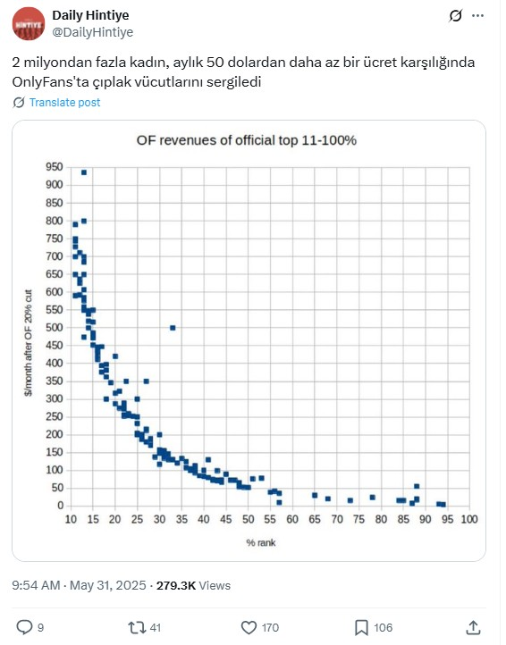
OnlyFans’ta içerik üreten 2 milyondan fazla kadının büyük kısmı ayda yalnızca 50 doların altında gelir elde ediyor
Süperstar Etkisi: Parlayan Azınlığın Gölgesinde Kalan Gerçekler
Bazı meslekler vardır ki, toplumun hayal dünyasında özel bir yer kaplar. Futbolcular, şarkıcılar, oyuncular… Bu alanlarda çalışan birkaç kişinin astronomik kazançları, milyonların zihninde bir ilüzyon yaratır. Medyada sıkça gördüğümüz bu “süperstarlar”, kendi mesleklerinin temsilcisi gibi algılanır. Oysa gerçek çok daha farklıdır.
Hayal Satılan Sektörler
Futbolcu ya da popçu olmak, özellikle gençler arasında "kurtuluş" gibi görülür. “Ya topçu olacaksın ya popçu” söylemi, bu algının ne kadar yerleştiğini gösteriyor. Ancak bu mesleklerde başarıya ulaşma ihtimali, istatistiksel olarak piyangoyu kazanmaktan farksızdır. Profesyonel futbolcuların büyük kısmı alt liglerde düşük maaşlarla mücadele eder, müzisyenlerin çoğu geçimini sağlamakta zorlanır. Ama ekrana çıkan birkaç ünlü isim, bu mesleklerin tamamına dair algıyı biçimlendirir.
Bu durum sadece gelirle ilgili değil; görünürlükle, itibarla ve "başarı" tanımıyla da ilgilidir. Toplum olarak yalnızca zirvedekileri gördüğümüz için, o zirvenin altındaki binlerce kişinin çabası, mücadelesi ve başarısızlığı görünmez hale gelir.
Süperstar Etkisinin Tehlikesi
Bu yanılsama, bireyleri gerçeklikten uzaklaştırır. Eğitim, emek, sabır gibi klasik başarı yolları "sıkıcı" bulunur hale gelir. Kısa yoldan şöhret olma arzusu, yalnızca hayal kırıklığı doğurmaz; aynı zamanda sosyal değerleri de aşındırır. Gençler, bir gecede “bir şey” olma hevesiyle sağlam temellere dayanmayan yollara sapar. Oysa o yolların sonu çoğu zaman çıkmazdır.
Gerçek başarı ise çoğu zaman sessizdir. Kamera ışıklarının uzağında, yıllar süren emeğin sonucudur. Ama bu hikâyeler ne yazık ki ekranlara taşınmaz, trend olmaz, manşetlere çıkmaz. Çünkü medya parıltıyı sever; parıltıysa çoğu zaman gerçeği örter.
Ve Dijital Dünyanın Yeni Parıltısı
Bu süperstar etkisi yalnızca geleneksel alanlarda değil, dijital dünyada da karşımıza çıkıyor. Son yıllarda özellikle bazı platformlarda -örneğin OnlyFans- birkaç kişinin uçuk kazançları manşetlere taşınıyor. Ancak gerçekte bu platformlarda içerik üreten milyonlarca kişinin büyük çoğunluğu ya hiç kazanmıyor ya da ayda birkaç kuruşluk gelirle yetinmek zorunda kalıyor.
Yukarıda paylaştığım istatistikten de görebileceğiniz gibi, OnlyFans’ta içerik üreten 2 milyondan fazla kadının büyük kısmı ayda yalnızca 50 doların altında gelir elde ediyor.
Tıpkı sahnedeki pop yıldızları gibi, bu platformlardaki birkaç kişi yüzünden bir meslek, bir hayat tarzı ya da bir "fırsat kapısı" gibi sunuluyor. Oysa yine aynı kural geçerli: En çok kazanan birkaç kişi, geride kalan milyonların üstünü örtüyor. Ve bu, yalnızca ekonomik değil; sosyolojik, psikolojik ve kültürel bir kırılma yaratıyor.
29 Mayıs 2025 Cumartesi
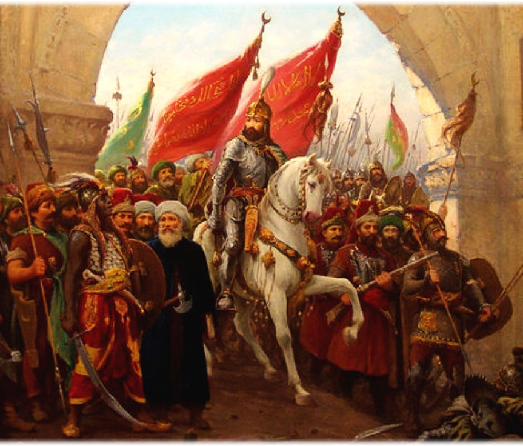
Bir çağı kapatıp başka bir çağ mı açtık?
Bir çağı kapatıp başka bir çağ mı açtık?
tarihimiz ne zaman başlamalı sorusuna cevabı “islamla”dır Ahmet Cevdet paşanın. ancak ikinci bir milattan söz ederken işler ilginçleşir: "yeni tarihi de iki kısma ayırabiliriz: ikinci kısmın mebdei, matbaanın keşfidir”
Cevdet paşanın önünde fetih gibi bir köşe taşı dururken, neden aynı tarihlere denk gelen matbaanın icadını seçti?
İstanbulun fethi dünya tarihi için büyük bir olaydır ancak yeni çağı başlatan domino taşlarından yalnızca birisidir. Bu büyük değişimi tek bir olaya indirgemek dünya tarihine haksızlık olur.
Kökün mazide olması, ancak dalların atiye uzanacaksa sana güç verir, diğer türlü ancak zihinde “bir acı kök tadı”dır.
Milli bayramların pek çoğuyla birlikte 29 mayısta da kutlanacak bir şey görmüyorum. Belki başımızı iki diz kapağımız arasına yerleştirip “Ben neyim ve bu hal neyin nesi?” diye soruvermek için bir “muhasebe” vesilesi…
25 Mayıs 2025 Cumartesi
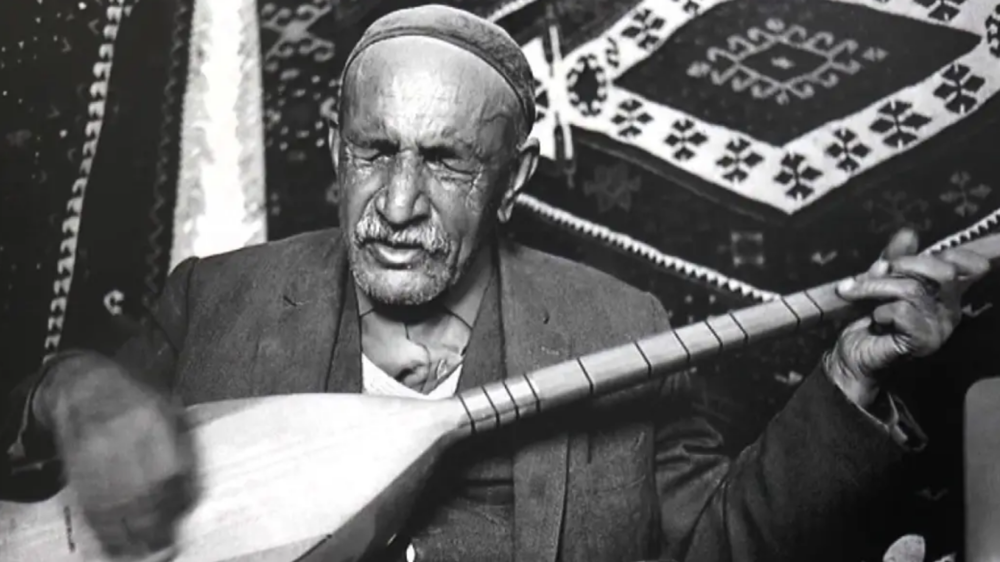
Bu sözü haklı kılan tek şey veyselin kör olması
Güzelliğin On Par’etmez
“Güzelliğin on par’etmez” sözü, kulağa derin ve erdemli bir öğüt gibi gelir. Ama bu sözün değerini belirleyen şey, onu söyleyenin –Âşık Veysel’in– görme engelli olmasıdır. O, güzelliği gözle değil, gönülle aramak zorundaydı. Fakat bizler için durum öyle değil.
İnsanoğlu, güzelliğe kayıtsız kalamaz. Bu bir tercih değil; biyolojik bir programlama. Evrimsel kodlarımız, sağlıklı ve simetrik olanı çekici bulacak şekilde yazılmış. Güzellik, yalnızca estetik değil; bilinçaltımızda sağlık, gençlik ve hatta güven anlamına geliyor.
Ve kabul edelim: Güzellik, neredeyse her şeyin önüne geçebiliyor. Zekâyı, karakteri ya da yeteneği fark etmeniz için bir insanla vakit geçirmeniz gerekir—hatta zannettiğinizden daha fazla vakit geçirmeniz. Ama güzellik öyle mi? Bir bakış, bir saniye, belki yarım saniye... Yetiyor da artıyor.
İlk izlenimler neredeyse her zaman görselliğe dayanıyor. İç dünyayı keşfetmek zaman, sabır ve çaba isterken; dış görünüş bir anda hüküm verdiriyor. Ve güzeller bu hükümden her zaman kazançlı çıkıyor.
Bu yüzden güzellerden alacaklıyız. Onlar, çoğu zaman çaba harcamadan kazandıkları ilgiyi ve avantajı, farkında bile olmadan taşıyorlar. “Güzelliğin on par’etmez” demek istiyoruz çünkü adil olsun istiyoruz. Ama gerçeği söylemek gerekirse, güzellik bu dünyada hâlâ en hızlı geçen para birimi.
24 Mayıs 2025 Cumartesi
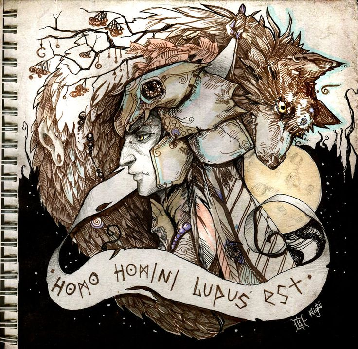
Homo homini lupus
"Homo homini lupus" Üzerine: Türkçede Kurtların Gölgesinde
"Homo homini lupus" — "İnsan insanın kurdudur." Bu meşhur Latince söz, insanın insana karşı acımasız, yırtıcı doğasını vurgular. Ancak ilginç olan, bu sözün Türkçeye çevrildiğinde, orijinaline kıyasla bambaşka ve belki de daha zengin bir anlam kazanmasıdır. Bunun temelinde Türkçedeki "kurt" kelimesinin çift anlamlılığı yatar.
Türkçede “kurt” hem ormanda dolaşan, dişleriyle yırtan, doğrudan tehdit oluşturan yırtıcı hayvanı ifade eder; hem de meyvenin, etin, ağacın içine sinsice girip onu içten içe çürüten, görünmez bir şekilde yok eden haşereyi. Bu iki anlam birleştiğinde, "insan insanın kurdudur" sözü yalnızca dışsal saldırganlığı değil, aynı zamanda içsel çürümeyi, ihanetin ve yozlaşmanın sessiz ilerleyişini de çağrıştırır.
Orijinal Latince ifadede daha çok açık saldırganlık, yırtıcılık ve vahşet öne çıkarken, Türkçedeki "kurt" kelimesi bu anlamı korumakla birlikte bir başka boyut ekler: içerden kemirme, bozulma ve çözülme. Yani insan, yalnızca diğerine saldıran bir yırtıcı değildir; bazen de dost görünen bir zehir, içeride yaşayan ve zamanla yapıyı çökerten bir kurttur.
Bu çifte anlam, sözün Türkçedeki etkisini derinleştirir. Belki de bu yüzden, bu çeviri bizde daha çok yankı bulur. Çünkü biz, dost meclislerinde kurda kuzu teslim eden masallarla büyür, en büyük yıkımın bazen içeriden geldiğini biliriz. Bizim dilimizde kurt sadece dişleriyle saldıran bir yırtıcı değil, aynı zamanda görünmez bir düşmandır — elmayı içten çürüten, ete sinsice yerleşen bir haşeredir. İnsan da böyle olabilir: dışarıdan dost görünen ama içeride kemiren, yavaş ve sessiz bir yok edici. İşte bu yüzden “insan insanın kurdudur” sözünü duyduğumuzda, aklımıza sadece vahşet değil, ikiyüzlülük de gelir. Tıpkı “kurtla yiyip çobanla ağlamak” deyiminde olduğu gibi: hem yıkanla ortak olup hem de yıkılanla gözyaşı döken o ikircikli insan hâli.
19 Mayıs 2025 Cumartesi
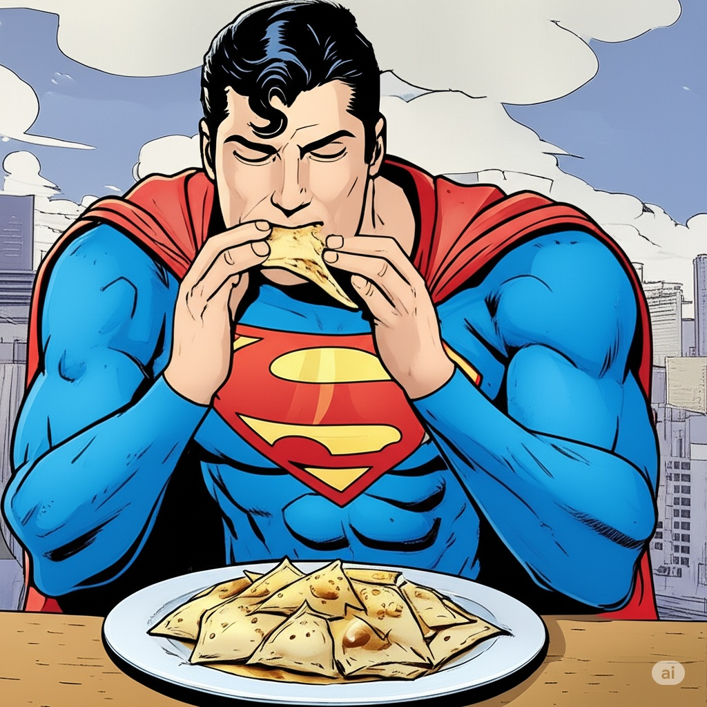
“ Bir Kriptonit Olarak Mantı.”
Ters Superman Etkisi Veyahut Bir Kriptonit Olarak Ananızın Mantısı
Daha önce, yurt dışındayken kendimi sonunda güçleri geri alınmış bir Superman gibi hissettiğimi söylemiştim. Şimdi Türkiye’ye döndüm ve tekrar aynı şekilde hissediyorum: Güçleri alınmış bir Superman gibi. Bu saçmalığı açıklamak istiyorum.
İlkokul ve ortaokulu gecekondu mahallelerinde okudum. Liseyi, 28 Şubat sonrası dönemde bir meslek lisesinde geçirdim. Ardından eğitim fakültesine devam ettim. Bu okullarda hep belli bir çevreyle sınırlı kaldım. Yüksek tahsil için yurt dışına çıktığımda ise hayatımda ilk kez akademisyen, bürokrat ya da yönetici çocuklarıyla arkadaşlık kurma fırsatım oldu.
Bu yazıda özellikle birinden bahsedeceğim: Gerçek ismini vermeyeceğim ama “Oğulcan Çelebi” (kısaca OÇ) gayet uygun bir takma ad gibi geliyor.
OÇ, iyi bir üniversite adına yurt dışına burslu olarak gönderilmişti. Ancak orta halli bir Anadolu üniversitesinden mezun olmuş, bilgi ve kültür seviyesi oldukça vasat biriydi. "Ulan bunu mu buldunuz gönderecek?" dedirtecek türden. Ama konuştukça sırlarını dökmeye başladı.
Küçük bir Anadolu şehrinden gelen OÇ, çevresiyle ve siyasetçi tanıdıklarıyla hava atmaya bayılıyordu. Sahip olduğu bu mirasın, entelektüel kapasiteye değer veren insanlar arasında hiçbir kıymetinin olmadığını çok geçmeden anladı. Hatta, köyünde övündüğü bu bağlantılar burada küçümsenme sebebine dönüştü. O da bir yerden sonra, anasının mantısını yemeye gelen siyasilerin hikâyelerini anlatmayı bıraktı. Ama biz bu süreçte o hikâyeleri çoktan ezberlemiştik. Babasının nasıl etkili bir yerel politik figür olduğunu, hangi siyasilerin evlerine geldiğini, anasının mantısını nasıl övdüklerini sık sık dinledik. Kendisinin pek garibanlık anısı olmadığından, babasınınkileri anlatırdı.
OÇ gibileri izlemek zaman zaman insana ilginç bir tat veriyor. Senin 4.00 ortalamayla bitirdiğin bölümü zar zor bitirmesi, başkasına parayla ödev yaptırması, senin kolayca üstesinden geldiğin entelektüel işleri kıvıramaması... Hem biraz acı hem biraz buruk, ama dürüst olalım: azıcık da keyifli.
Bu aciz OÇ'lerin yanında zekânla, çalışkanlığınla parlamamak elde değil zaten. İnsanın aklına geliyor: “Acaba buradan havalanıp uçabilir miyim?” diye. İnsan kendini bir noktada gerçekten insanüstü hissediyor.
Ama sonra yurda geri dönüyorsun. Gerçekten hizmet etmek, faydalı olmak için dönüyorsun üstelik. OÇ’ler gibi mecburiyetten değil, bilinçli bir tercih olarak. Ve bir bakıyorsun, yurt dışında geçer akçe olan zekân, bilgin, entelektüel kapasiten burada yavaş yavaş sönmeye başlıyor.
Çünkü burada geçer akçe, ne yazık ki hâlâ babanın politik bağlantıları ve ananın mantısı.
OÇ’ler işlerini parmak şıklatmasıyla hallederken, sen her adımda takılıyorsun. Çünkü kurallar onlar için değil, senin için var. Kanunlar ve sistem, küçük sineklerin takılıp kaldığı, büyük sineklerin ise rahatça sıyrıldığı bir örümcek ağı gibi.
Ve sen… O örümcek ağına yapışmış, akıllı ama minik bir sinek olarak çırpınıp duruyorsun; bildiğin her şeyle, inandığın tüm değerlerle sistemle mücadele etmeye çalışıyor, ama her seferinde biraz daha tükeniyor, sonunda ise sadece sessizce çürümeyi bekliyorsun.
05 Mayıs 2025 Cumartesi
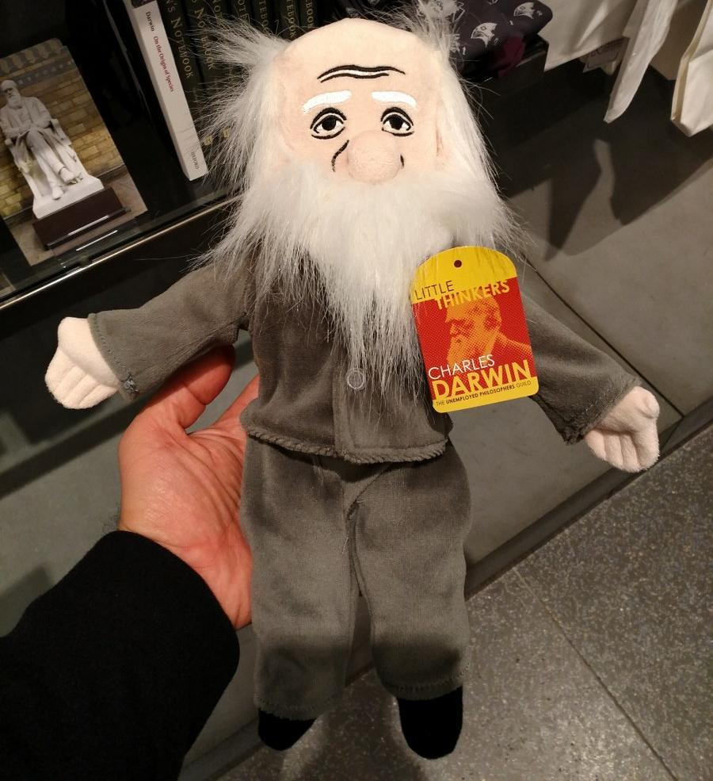
“Murray Kitabevi’nden yayınlamak üzere, orkideler üzerine ufak bir kitap yazıyorum. Ve bugün, orkidelerden diğer her şeyden çok daha fazla nefret ediyorum.”
Meslek Seçiminde Sevgiye Fazla Kıymet Vermek
“Bazen lise sondaki gençlere soruyorum 'Hangi bölüme yazılacaksın?' diye. 'Nereyi kazanırsam.' diyorlar. Bu sözü söylediği zaman bir insanın ideali yok demektir. Bir insanın idealinin olması, yapacağı işi sevmesi lazım.”
— Prof. Dr. Mübahat Kütükoğlu
Bu söz, meslek seçiminde sevginin ve idealin önemi üzerine güçlü bir vurgu taşıyor. Ancak bu düşünceye içten içe itirazlarım var.
Meslek seçiminde “sevgi” çokça yüceltilen, hatta neredeyse kutsal bir kriter haline getirilmiş durumda. Oysa ben bu kavramın abartıldığını düşünüyorum. İşini severek değil, profesyonelce yapmak gerekir. Meslek bir sevda meselesi değil, bir sorumluluk meselesidir.
Ayrıca, sevdiği işi yapma “lüksü”, her bireyin erişebileceği bir imkân değil. Fırsat eşitliğinin olmadığı bir toplumda “idealler” çoğu zaman sadece belli bir sosyoekonomik düzeyin ayrıcalığına dönüşüyor. Parlak zekâların daha kazançlı ve güvenli alanlara yönelmesi, sadece bireysel tercih değil, yapısal bir zorunluluğun sonucu.
Kaldı ki, çok sevilen işler zamanla insanı tüketmeye başlıyor. Sevdiğiniz işi yaparken, o işin sınırları ortadan kalkıyor; hayatınızın her alanına sızıyor. Uykunuzdan, sağlığınızdan, hatta sevdiklerinizden çalıyor. Bir süre sonra sevgi yerini yorgunluğa, hatta nefrete bırakabiliyor.
“Murray Kitabevi’nden yayınlamak üzere, orkideler üzerine ufak bir kitap yazıyorum. Ve bugün, orkidelerden diğer her şeyden çok daha fazla nefret ediyorum.”
— Charles Darwin
İşte bu yüzden, meslek gibi ağır sorumluluklar içeren bir seçimde, duygusal değil yapısal kıstaslara dayanmalıyız. Sevgi, güvenilmez bir rehberdir. Vicdan ya da ideal gibi soyut mefhumlarla mesleki yükümlülüklerimizi tanımlamak yerine, daha somut, ölçülebilir ve sürdürülebilir ölçütler belirlemek zorundayız.
Belki de mesele tam da budur: “Ele geçmezse eğer sevdiğimiz, çare ne; eldekini sevmeliyiz.”
Çünkü hayat, ideal mesleği bulmaktan çok, elimizdekini anlamlı kılmakla ilgili olabilir.
04 Mayıs 2025 Cumartesi
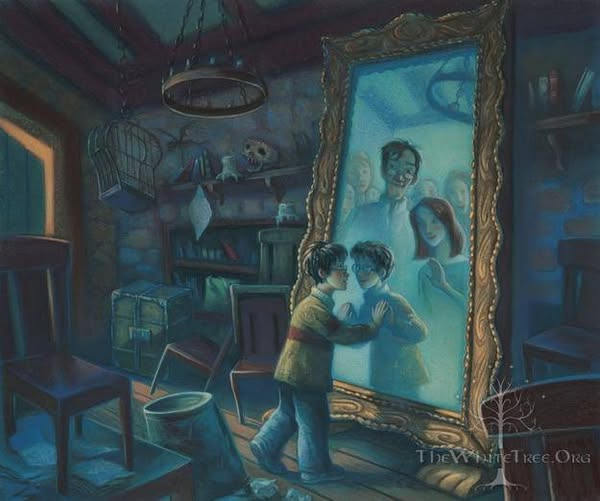
Harry Kelid Aynasına Bakarken
Kelid Aynası ve Huzurun Yüzü
Harry Potter’ın ilk filminde beni derinden etkileyen bir sahne vardır. Harry, gizemli bir aynanın—Kelid Aynası'nın—karşısına geçer. Bu sıradan bir ayna değildir. Harry ona baktığında, kaybettiği ailesini yanında görür. Ron ise aynı aynaya baktığında, okulun kupasını kazanmış ve omuzlarda taşınmaktadır.
Dumbledore, bu aynanın sırrını şöyle açıklar:
“Bu ayna, yüreklerimizin derinliklerinde yatan tutkuları ve istekleri gösterir.”
Ve belki de en dokunaklı sözünü ardından söyler:
“Dünyanın en mutlu insanı, Kelid Aynası’nı sıradan bir ayna gibi kullanandır—ona baktığında sadece kendini, olduğu haliyle görür.”
Bu cümleler bana Fecr Suresi’nin son ayetlerini hatırlatıyor:
“Ey huzura ermiş nefis! Rabbine dön, O senden hoşnut, sen O'ndan hoşnut olarak! Seçkin kullarımın arasına katıl, Cennetime gir!”
Cennete girebilecek olan, yalnızca "mutmain" olmuş bir nefistir. Yani kalbi sükûnete ermiş, içindeki açlığı dindirmiş bir insan. Aksi hâlde, nerede olduğunun, hangi nimetlere eriştiğinin hiçbir anlamı kalmaz.
Eğer kalbin huzur bulmamışsa, en güzel yemekler ağzında kül olur. Atlas yorganlar batar, güzel kokular tiksindirir. Lüks de, bolluk da, hatta cennet gibi görünen bir ortam bile sana azap olabilir. Çünkü içindeki boşluk, dışarıdaki her şeyi anlamsızlaştırır.
Aslında huzur, dış dünyada değil, kalpte başlar. Tıpkı Kelid Aynası’nın gösterdiği gibi…
Bazen en büyük özlemimiz bir anne eli, bazen bir omuzda yükselmek, bazense sadece "yeterince" olmak. Ama en kıymetlisi, aynaya bakıp “ben bu halimle tamamım” diyebilmek.
İşte o zaman, cenneti dışarıda değil, içeride buluruz.
27 Nisan 2025 Cumartesi
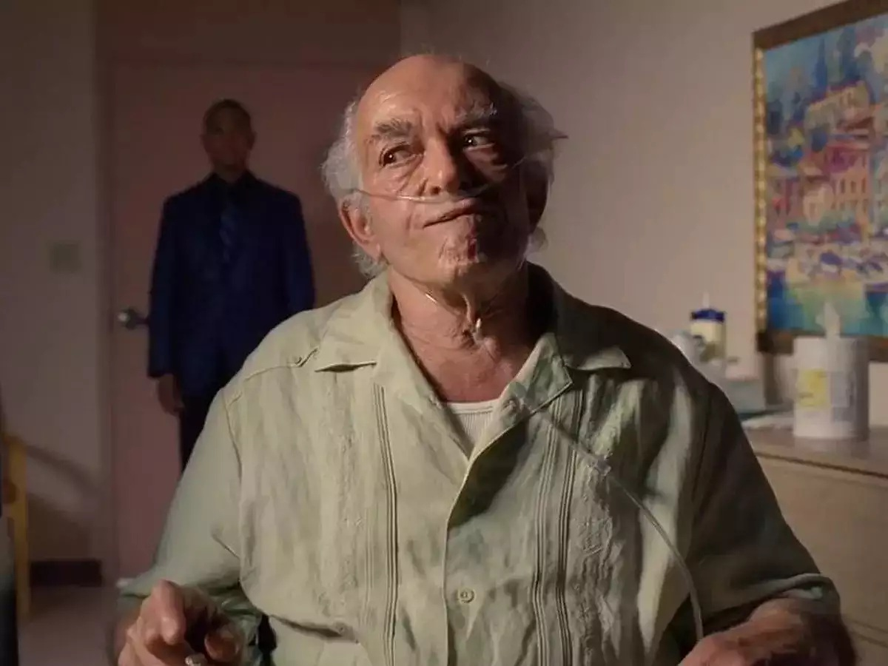
kaybedecek hiçbir şeyi olmayanlar kaybetmekten korkmazlar.
Oyun Teorisi, Nash Dengesi ve Gerçek Hayattaki Uygulamaları
Son zamanlarda aklımı kurcalayan bir konudan bahsetmek istiyorum: oyun teorisi ve bunun gerçek hayattaki etkileri.
Özellikle Nash Dengesi kavramı ve İki Tutsak Problemi üzerine düşünürken, bunun sadece matematiksel bir teori olmadığını, hayatın birçok alanında – özellikle adalet sisteminde ve suçla mücadelede – nasıl kullanıldığını fark ettim.
Konuya aşina olanlar bilir; oyun teorisinde klasik bir örnek vardır: İki Tutsak Problemi.
Bu senaryoda iki suçlu yakalanır ve ayrı ayrı sorguya alınır. Her birine şu teklif yapılır:
Eğer diğerini ihbar edersen ve o sessiz kalırsa, sen serbest kalırsın; arkadaşın ise ağır bir ceza alır.
Eğer ikiniz de birbirinizi ihbar ederseniz, her ikiniz de orta düzeyde ceza alırsınız.
Eğer ikiniz de sessiz kalırsanız, hafif bir ceza ile kurtulursunuz.
Bu pazarlık ortamında suçluların her biri, karşı tarafın kendisini ihbar edeceğinden endişe ederek çoğunlukla suçu itiraf eder.
İstatistiklere göre, böyle bir durumda suçluların yaklaşık %95'i suçu itiraf etmektedir.
İşte bu davranış biçimi, Nash Dengesi'nin klasik bir örneğidir: Her oyuncu, diğerinin stratejisini değiştirmeyeceğini varsayarak kendi en iyi hamlesini yapar.
Bu teori, Amerika'da özellikle polis ve savcılık birimleri tarafından suçla mücadelede etkili bir şekilde kullanılmıştır.
Ancak zamanla suçlular da bu taktiklere karşı kendi stratejilerini geliştirmiştir.
Örneğin, popüler kültürde romanlardan, filmlerden ve dizilerden aşina olduğumuz kartellerin uygulamaları buna bir örnektir.
Kartellerin içinde ispiyonculuk (diğer bir ifadeyle muhbirlik) yapan kişilere uygulanan cezalar son derece acımasızdır:
İspiyoncu yalnızca kendisi değil, ailesi, yakınları, hatta uzaktan tanıdıkları bile hedef alınır. Hatta karteller, ispiyonculuk yapan kişinin bir zamanlar selam verdiği komşuları ya da başını okşadığı kediyi bile "cezalandırır".
Bu tür ağır yaptırımların temel amacı, kişinin ihanet etmekten elde edeceği kazançtan çok daha büyük bir zarar riskiyle karşı karşıya kalmasını sağlamaktır.
Böylece, "iki tutsak probleminin" varsayımlarından biri kırılmış olur: Artık ihbar etmek, en kârlı strateji değildir.
Bu durum Nash Dengesi'ni bozar ve polis veya savcılık birimlerinin klasik pazarlık yöntemlerinin işe yaramasını zorlaştırır.
Kısacası, oyun teorisinin adli süreçlerdeki kullanımı etkili olmuş, ancak suç örgütleri de buna karşı kendi "karşı oyun teorilerini" geliştirmiştir.
23 Nisan 2025 Cumartesi
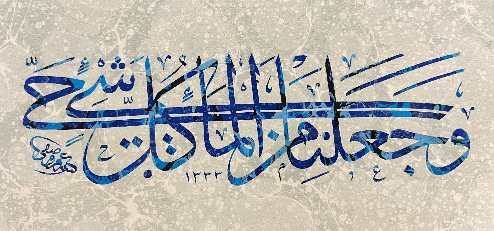
***
İnandığımız Gibi mi Yaşıyoruz, Yaşadığımız Gibi mi İnanıyoruz?
Hazreti Ömer’e nispet edilen bir söz var, çoğumuz duymuşuzdur:
"İnsanlar inandıkları gibi yaşamazlarsa, yaşadıkları gibi inanmaya başlarlar."
Bu söz, ilk bakışta bir hakikatin tokat gibi ifadesi gibi görünür. Özellikle inancın, hayata yön veren asli kuvvet olduğu bir düşünce sisteminde, insanın inandığı ilkelerden sapması bir tür zayıflık, bir tür bozulma olarak algılanır.
Ama ya mesele sadece zayıflık ya da sapma değilse?
Ya “yaşadığımız gibi inanmak” kaçabileceğimiz bir şey değilse?
Etimizle, kemiğimizle, ruhumuzla, zihnimizle hayata temas eden varlıklarız. Yaşantılarımız, çevremiz, zamanın ruhu; tüm bunlar inancımızı da dönüştürmez mi? Her şeyin değiştiği bir çağda, sabit kalmak gerçekten mümkün mü? Aynı ırmakta iki kez yıkanmak imkânsız denmişti; bugün belki artık ırmağın yatağı bile yer değiştirmiş durumda.
Peki, bu değişim karşısında inanç nasıl konum almalı?
Üzerimize gelen gerçekler karşısında dağ gibi mi dikilmeli, yoksa su gibi mi akıp geçmeli inancımız?
Evrim örneği üzerinden gidelim. 30–40 yıl öncesine kadar, ana akım İslami düşünce içerisinde evrim teorisine ciddi bir karşı duruş vardı. Bu tutumu eleştirmek ya da savunmak değil amacım. Ama bugün, bambaşka bir manzara var karşımızda. Konjonktür değişti. Bilimsel gelişmeler, bilgiye ulaşım, düşünsel açıklık... Tüm bunlarla birlikte İslam düşüncesi içinde evrime daha sıcak bakan, onu farklı şekillerde yorumlayan yeni yaklaşımlar ortaya çıktı.
Bir akademisyen, bir araştırmacı, bir yazılımcı ya da bilim meraklısı olarak evrimsel algoritmalarla çalışan birisi için bu gerçeği görmezden gelmek kolay değil. Bir tarafta gözle görülen bir gerçek var; diğer tarafta ise inanç. Ama fark ediyorum ki inanç, bu gerçekle çatışmak yerine onunla uyumlanma yoluna gidiyor.
Bunun adı kaymak mı? Zayıflık mı?
Yoksa bu, inancın zamanla dinamikleşmesi mi?
Dünyanın yuvarlak olduğunu kabul edişimiz gibi, uzayın derinliklerinde keşfettiklerimiz gibi, geçmişte “kesin doğru” sandıklarımızın değiştiği gibi... İnanç da bazen bir durup soluklanıyor, bakıyor, yeniden anlamaya çalışıyor belki.
İnandığımız gibi yaşamayı elbette isteriz. Ama yaşadığımız hayatın içinde, inancımızı da yeniden anlamlandırmak zorunda kalıyoruz belki de. Bu bir kaçış değil; bu bir uyum, bir arayış. Belki de hakikate biraz daha yaklaşmanın yolu.
23 Nisan 2025 Cumartesi
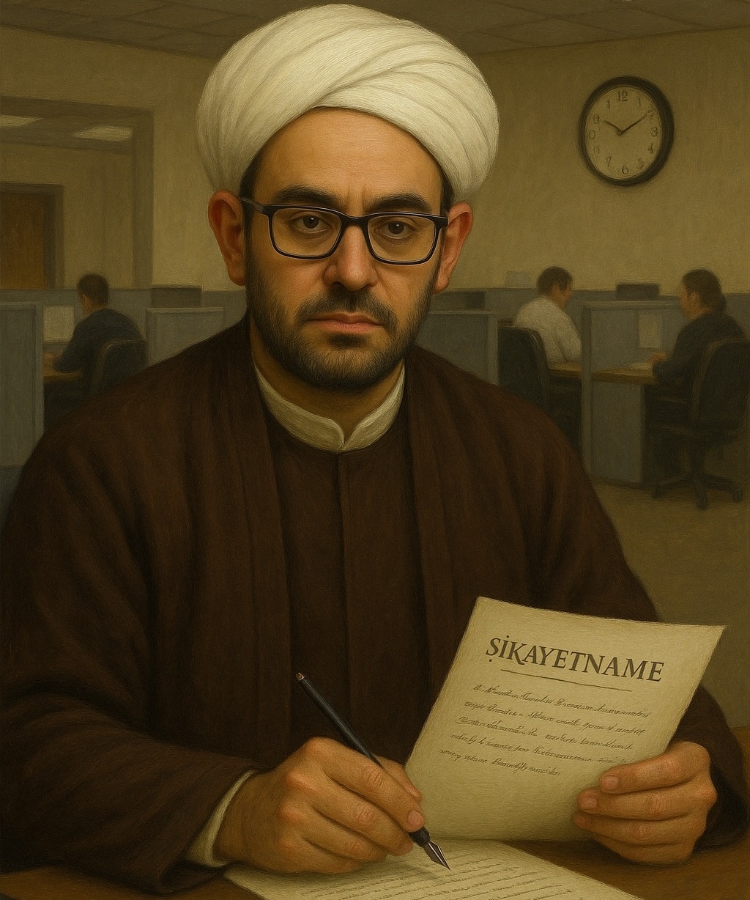
Bakmayın siz atanamamış humeyni gibi durduğuna, bendeniz fuzuli donunda şikayetnamemi yazarken
Şikâyetnâme-i Zamanımız (Yüksek Tahsil ile Yüksek Mağduriyetin Hikâyesi)
Selâm virdüm minnet değildir diyü almadılar, Mahviyet ile hâlim anlattım, gam değildir diyü işitmediler. İlim tâlibi iken arz-ı himmet eyledik, Zan eyledik ki bir gün dahi himmet görürüz.
Didüm: — Ey sahib-i kararlar, bu ne cefa-yı gârib ve ne inkâr-ı meveddetdir? Didiler: — Adet-i devletdür, kim nereye yazıldıysa orada hizmet eyler. Didüm: — Ben ve refikam, devlet himmetiyle çıkdık dârü’l-fünûna. Zahmet çektik, servet değil, gayretle yürüdük. İlim ile meşgul olduk, nice mükâfatlar aldık, Adımız dahi şevketle anıldı.
Didiler: — Ne gam! Hizmet vaktidir, kimseye hususiyet gerekmez. Didüm: — Bu burs bize bir ödül değil midir? Niçin bu ihsan, şimdi bir esaret kılındı? Evlilik gibi mübarek bir birlik, Niçin iki şehre kurban edildi?
Didiler: — Kanun bellidir lakin yordam meçhuldür, Birlik isterseniz sabr-ı meçhûl gerek.
Didüm: — Yollar yok, dilekçe yok, derman yok, Daha neyle varalım huzur-u adalete? Çünkü yol kapalı, usul belirsiz, mercî meflûç.
Didiler: — Halinizden haberimiz var amma neyleyelim? Vazife büyüktür, hâlet-i hâzırada çare yoktur.
Didüm: — Bu ne garip haldir ki, devletle yücelen, Devletle ayrılığa dûçar olur. Mülk-i adaletde aşk mahrum, vuslat meçhul…
Dediler: — Vaziyet budur, alışageldik biz. Gördüm ki ne himmet var, ne işitmek muradları, Ne hâlime cevab, ne feryâdıma sedâ...
Nâ-çâr terk-i mücadele kıldım, Ve ben de Fuzûlî gibi me’yûs u mahrûm, Kendi köşeme çekildim, içimde bin cevapsız suâl ile...
06 Nisan 2025 Cumartesi
Haldun Taner’e adanan koltuk
Büyük Tiyatroculara Adanan Tiyatro Koltuklarının Gereksizliği Üzerine
Ankara'da ufak bir tiyatro sahnesinde her koltuğun arkasına ünlü bi tiyatrocunun ismi yapıştırılmış. işlevsel bir amacı yok. biletlemede yine klasik harf-sayı kodları kullanılmış. Benim önümde mesela Haldun Taner yazıyordu. Numaram da ortalarda F8.
Ne işlevsel, ne de bir önem arz ediyor. Haldun Taner'in isminin verildiği bir tiyatro ve bir müze zaten var. Ankara'daki yerel bir tiyatroda isminin yazmasının hatırasına da pek katkı sunduğunu söyleyemem.
Sen bu koltuklara müşterilerin isimlerini versen halbuki hem tiyatron için gelir elde edersin, hem de insanların aidiyet hissetmesini sağlar, insanların tiyatro özelinde hayatlarında yer teşkil edersin.
Bilmiyorum çok mu kayserili bakış tarzı ama, bana kalsa parktaki banklardan göze görünür ağaçlara kadar her şeyde bunu uygulamaya çalışırım.
05 Nisan 2025 Cumartesi
you know nothing jon snow
Bir Martin, İki Mustafa: Nepotizmin Gölgesinde Kahramanlık
Game of Thrones’u neden sevdik?
Çünkü o dünya, bizimkinden farklıydı. Kadınların, eşcinsellerin, piçlerin, cücelerin, sakatların kahraman olabildiği bir evren yaratmıştı George R.R. Martin. Güç ve soyluluk doğuştan gelmek zorunda değildi; karakterler kaderlerini kendi seçimleriyle çiziyordu.
Ancak büyü son sezonda bozuldu. Dizinin en güçlü anlatılarından biri olan piç Jon Snow’un aslında meşru bir veliaht, tahtın gerçek varisi olduğu ortaya çıktı. Yani, o çok sevdiğimiz tersine dünya bir anda düzeldi. Yine asil kan, yine soy, yine tahtlar genetikle kutsandı.
Tarih boyunca da benzer hayal kırıklıkları yaşandı.
Birinci Mustafa: Peygamberin Adaleti
Hz. Muhammed, soyun ve nesebin en önemli sayıldığı bir toplumda ortaya çıktı. Ama o, “Üstünlük takva iledir” diyerek tüm ezberleri bozdu. İstişareyi emretti, toplumun en ayrıcalıklılarını azat edilmiş kölelerin komuta ettiği ordularda sade birer asker yaptı. Köleleri soylu kadınlarla evlendirdi. “Kızım Fatıma bile suç işlese cezalandırırım,” dedi.
Ama ne oldu? Vefatından sadece otuz yıl sonra, hilafet babadan oğula geçmeye başladı. Bugün, 1400 yıl sonra, soy bağı olmayanlar bile onun torunu olduklarını iddia ederek güç devşiriyorlar. Adaletin, liyakatin yerine yine soy, yine kan bağı geçti.
İkinci Mustafa: Devrimin Gölgesinde
Diğer Mustafa, mutlak gücün babadan oğula geçtiği bir toplumda, yetim bir çocuk olarak var oldu. Ama öyle bir mücadele verdi ki, sonunda o mutlak gücü kendi ellerinde topladı. Ardından devrimler yaptı. Soyluluğu, aristokrasiyi önemsizleştirdi. Hatta soyluluğu ima eden unvan ve soyadlarının kullanımını bile yasakladı.
Ama ne acıdır ki, daha kendi sağlığında bile küçük ama etkili memuriyetler babadan oğula geçmeye başladı, leyli meccanilere referans ile girilir oldu. Devrimin kalbinde bile nepotizm sinsice kök saldı.
Sonuç: Hayallerde Bile Yenemediğimiz Bir Hastalık
Diyeceğim şu ki, en büyük devrimciler bile nepotizmi tam anlamıyla yenemedi. Ve en güzel romanlarımızda bile tahtlara hak eden piçler değil, asil prensler oturdu.
Kahramanları doğurması gereken hikâyeler, yine aynı döngünün içine sıkıştı: Güç, kanla yazıldı.
01 Nisan 2025 Cumartesi
Bazı İnsanlar Sadece Dünyanın Yandığını Seyretmek İster
Bazı İnsanlar Sadece Dünyanın Yandığını Seyretmek İster
Christopher Nolan’ın unutulmaz Batman üçlemesinde, The Dark Knight filminde geçen bir diyalog, insan doğasının karanlık bir yanını gözler önüne serer. Bruce Wayne ve sadık hizmetkârı Alfred arasındaki bu konuşma, suçun ve kaosun ardındaki bazı motivasyonların nasıl kavranamaz olduğunu etkileyici bir şekilde anlatır.
Alfred’in Burma’daki deneyimi, suçluların her zaman mantıklı hedefler peşinde olmadığını gösterir. Klasik suç motivasyonları olan para, güç ya da intikam gibi unsurlar yerine, bazı insanlar yalnızca kaosu amaçlar. Onlar için mantıklı bir kazanım yoktur; sadece düzensizlik yaratmak, dünyayı yakmak isterler.
Bu anlayış, modern toplumda karşılaştığımız birçok sorunu da açıklar. Politik veya ekonomik krizler, bireysel suçlar ya da anarşi yanlısı hareketler incelendiğinde, bazı aktörlerin yalnızca yıkımı hedeflediğini görürüz. Bazen bir sistemi bozmak, bir düzeni çökertmek ya da bir toplumu kaosa sürüklemek, tek başına bir amaç haline gelir.
Alfred’in şu cümlesi, bu gerçeği özetler niteliktedir: "Bazı insanlar sadece dünyanın yandığını seyretmek ister."
Bu söz, sadece sinematik bir replikten ibaret değildir. Geçmişte ve günümüzde, bireysel veya toplumsal ölçekte, bu anlayışı benimseyen insanlar hep var olmuştur. Bu yüzden, her sorunun basit bir çıkar ilişkisine dayandığını düşünmek hata olur. Bazı motivasyonlar, insan aklının mantık çerçevesinde kavrayamayacağı kadar kaotik olabilir.
Bu diyalog bize, suç ve kötülüğün her zaman rasyonel olmadığını, bazen sadece kaosun peşinden gidildiğini hatırlatıyor. Ve belki de en büyük mücadele, bu kaosa anlam yüklemeye çalışmak değil, ona karşı durabilmekte yatıyor.
31 Mart 2025 Cumartesi
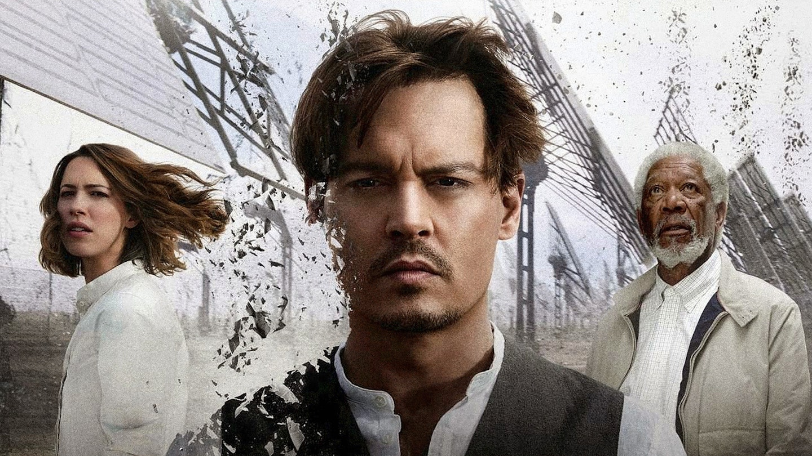
Transcendence (2014)
Transcendence: Harika Bir Fikir, Eksik Bir Film
Bilim kurgu ve yapay zeka temalı filmler arasında Transcendence'ın ayrı bir yeri var. İnsan zihninin bilgisayara yüklenmesi ve bu sayede geliştirilmesi gibi derin bir konuyu ele alıyor. Ancak, ne yazık ki bu büyük fikir sinemaya beklenen etkiyle yansıtılamamış. Hikaye orijinal, fikir heyecan verici, kadro muhteşem ama film olmamış. IMDb puanının düşük olmasının sebebi de tam olarak burada yatıyor. Film, etkileyici bir konuya sahip olmasına rağmen izleyicinin zihninde kalıcı bir iz bırakmıyor.
İkinci İzleyişte Daha Net Gördüğüm Sorun
Filmi ikinci kez izlediğimde, neden eksik hissettirdiğini daha iyi anladım. Asıl sorun, büyük ve karmaşık bir hikayenin iki saate sığdırılmaya çalışılması. Ne karakterler, ne de anlatılan hikaye yeterli derinliğe ulaşabilmiş. Film boyunca olaylar hızla akıp giderken, karakterlerin motivasyonlarını, duygusal değişimlerini ve teknolojinin etkilerini tam olarak hissedemiyoruz.
Transcendence Mini Dizi Olsaydı Daha İyi Olabilir Miydi?
Belki de bu hikaye bir dizi formatında daha başarılı olabilirdi. Dört bölümlük bir mini dizi olarak işlense, karakterler daha iyi gelişebilir, olay örgüsü daha sağlam inşa edilebilir ve izleyiciye derinlemesine bir deneyim sunulabilirdi. Sonuç olarak, Transcendence harika bir fikre sahip ama uygulamada eksik kalmış bir film. Yapay zeka filmleriyle ilgilenenler için izlenmeye değer olsa da, tatmin edici bir anlatım bekleyenler için hayal kırıklığı yaratabilir.
29 Mart 2025 Cumartesi
Kusursuz Arkadaş - Companion (2025)
Kusursuz Arkadaş - Companion (2025) Güzel film, eğlenceli, aksiyonu ve senaryosu gayet iyi, izlenir.
Bu tarz yapay zeka filmlerine "Turing tarzı" diyorum (bu tabiri az önce uydurdum). Ex Machina, Blade Runner 1-2, Westworld, A.I. Artificial Intelligence (2001) ve kısmen I, Robot gibi filmler bu kategoriye girer.
Bu filmlerde yapay zeka insan seviyesinde ve amacı insana benzemek. Ancak yapay zekanın gerçek potansiyeli, vizyonu veya gelecekte nasıl evrilebileceği hakkında pek fikir vermiyorlar.
Bence bu türün zirvesi Blade Runner’dır. Ancak "Turing Tarzı"nın dışında kalan yapay zeka filmleri de var. Eğer farklı perspektifler arıyorsanız, işte bazı öneriler:
Transcendence (2014) – Bilinci yapay zekaya aktarılan bir bilim insanının, neredeyse tanrısal bir güce ulaşmasını anlatır.
The Matrix (1999-2003) – Yapay zekanın insanlığı simüle edilmiş bir gerçeklikte hapsettiği distopik bir gelecek.
The Terminator (1984-2019) – Skynet'in insanlığı yok etmeye çalıştığı klasik AI distopyası.
Her (2013) – Fiziksel bedeni olmayan bir yapay zekayla kurulan derin ilişki.
Annihilation (2018) – Organik olmayan bir zekanın doğayla birleşerek bambaşka bir yaşam formu oluşturması.
Her biri yapay zekaya farklı bir bakış açısı sunuyor.
27 Mart 2025 Cumartesi
3 Body Problem | YOU ARE BUGS | Netflix
Böcekler, İnsanlar ve Üstün Zeka: Hayatta Kalma Mücadelesi Üzerine Bir Düşünce
Netflix’in Üç Cisim Problemi dizisinde Trisolarisliler, insanlara “Siz bizim gözümüzde böceksiniz” diyerek hem bir aşağılama hem de bir üstünlük iddiasında bulunuyor. Ancak dizinin finalinde, kahramanların bataklıkta milyonlarca böceği görmesiyle birlikte bu metafor bambaşka bir boyuta taşınıyor: İnsanlar, böceklerden zeka ve teknoloji açısından katbekat üstün olmalarına rağmen, onları tamamen yok edememiş durumda. Bu durum, akıllara şu soruyu getiriyor: Eğer karşımızda çok daha üstün bir zeka ve teknolojiye sahip bir rakip olursa —bu bir uzaylı uygarlık ya da yapay zeka olabilir— insanlık hayatta kalabilir mi? Böcekler hayatta kalmayı başardıysa, biz de başarabilir miyiz? Gelin bu karmaşık soruyu adım adım ele alalım.
Böcekler ve İnsanlar: Hayatta Kalma Stratejileri
“Böcekler hayatta kaldı, o halde biz de kalabiliriz” genellemesi ilk bakışta mantıklı görünebilir, ama derinlemesine bakıldığında bu iki türün hayatta kalma mekanizmaları arasında uçurumlar var. Böceklerin gücü, biyolojik adaptasyonlarından ve çeşitliliklerinden geliyor. Milyonlarca yıldır varlar, farklı ortamlara dayanabilen türleri mevcut, hızlı üreyebiliyorlar ve dış etkenlere karşı doğuştan gelen mekanizmalara sahipler. Örneğin, bazı böcek türleri toplu yok oluş olaylarından sağ çıkmayı başarmış; radyasyona, iklim değişikliklerine ve doğal afetlere karşı inanılmaz bir direnç geliştirmişler. Üstelik teknolojiye bağımlı değiller; dünya değişse bile evrimleşerek hayatta kalmaya devam edebiliyorlar.
İnsanlar ise tamamen farklı bir yol izliyor. Bizler zeka temelli varlıklarız. Hayatta kalmamızı sağlayan şey, fiziksel dayanıklılığımız değil; çevremizi değiştirme yeteneğimiz. Ateşi bulduk, aletler yaptık, şehirler kurduk, teknoloji geliştirdik. Ancak bu üstünlük, aynı zamanda bir zayıflık barındırıyor: İnsanlık, kendi yarattığı sistemlere bağımlı hale geldi.
İnsanlığın Dezavantajları
Eğer bir gün çok daha zeki ve teknolojik olarak üstün bir varlık —diyelim ki bir uzaylı uygarlık ya da kontrolden çıkmış bir yapay zeka— ortaya çıkarsa, insanlığın böcekler kadar dirençli olamayacağı açık. Neden mi? İşte birkaç neden:
Teknoloji Bağımlılığı: Elektrik, internet, altyapı ve üretim zincirleri gibi sistemler çökerse, modern insan hayatta kalmakta zorlanır. Böcekler için böyle bir risk yok; onlar doğanın bir parçası olarak işlev görmeye devam eder.
Yavaş Üreme: Böcekler milyonlarca yumurta bırakabilirken, insan nesillerinin yenilenmesi yıllar alır. Nüfusumuzu hızlıca toparlama şansımız yok.
Ekosistemden Kopuş: Avcı-toplayıcı dönemlerinden sonra, doğal ortamda hayatta kalma becerilerimiz büyük ölçüde köreldi. Çoğumuz, yiyeceğimizi marketten almaya alışkın; vahşi doğada ne yapacağımızı bilemeyiz.
Fiziksel Zayıflık: Silahlar ve savaş teknolojileri dışında, bireysel olarak insan bedeni doğanın zorluklarına karşı savunmasız. Böceklerin aksine, bizim zırhımız ya da zehrimiz yok.
Bu dezavantajlar, insanlığın üstün bir rakip karşısında kırılgan olduğunu gösteriyor. Zekamız ve teknolojimiz elimizden alındığında, geriye pek bir şey kalmıyor.
Böceklerin Avantajları ve İnsanlığın Kırılganlığı
Böceklerin avantajlarına baktığımızda, durum daha da çarpıcı hale geliyor. Onlar sayıca çok fazla, evrimsel olarak dayanıklı ve milyonlarca yıllık bir hayatta kalma mirasına sahipler. Teknolojiye ihtiyaç duymadan, çevre değiştikçe adapte olabiliyorlar. İnsanlık ise zekasını ve teknolojisini kaybettiği anda büyük olasılıkla yok olmaya mahkum. Böcekler, dünya üzerindeki yaşam döngüsünde bir şekilde yer bulabilirken, insanlık için aynı şeyi söylemek zor.
Peki, Direnme Şansımız Var mı?
Bu noktada akla şu soru geliyor: Eğer insan zekası hayatta kalmak için tek dayanak noktamızsa, kendinden daha üstün bir zekaya sahip bir varlığa karşı ne yapabiliriz? Böceklerin biyolojik direnci bizim için bir model olamaz, çünkü biz o yoldan gitmedik. Ancak zekamız, bize başka bir avantaj sunabilir: strateji geliştirme yeteneği. Üstün bir rakibe karşı direnmek için, belki de doğrudan bir çatışmadan ziyade gizlenme, ittifak kurma ya da rakibin zayıf noktalarını bulma gibi taktikler geliştirebiliriz. Üç Cisim Problemi’nde insanlık, Trisolarislilere karşı tam da bu tür bir mücadele sergiliyor: zeki, yaratıcı ama kırılgan bir direniş.
Yine de, eğer bu üstün varlık bizim teknolojiye olan bağımlılığımızı hedef alır ve sistemlerimizi çökertirse, şansımız oldukça azalır. Böcekler gibi evrimleşerek milyonlarca yıl dayanamayız; bizim süremiz çok daha kısa. Kaçınılmaz son mu olur, yoksa zekamızı kullanarak bir çıkış yolu bulabilir miyiz? Bu, rakibin ne kadar acımasız olduğuna ve bizim ne kadar hızlı adapte olabildiğimize bağlı.
Sonuç: Böcekler mi, İnsanlar mı?
Böcekler, doğanın sessiz kazananları. Onlar, üstün bir varlığın gelişine aldırmadan, kendi basit ama etkili yollarında hayatta kalmaya devam edebilir. İnsanlık ise bir yol ayrımında: Zekasına ve teknolojisine güveniyor, ama bu aynı zamanda onun en büyük zayıflığı. Belki de Üç Cisim Problemi’nin bize anlattığı şey şu: Böcek olmak aşağılama değil, bir hayatta kalma sanatı. İnsanlık olarak, bu sanatı öğrenmek için çok geç kalmış olabiliriz.
25 Mart 2025 Cumartesi
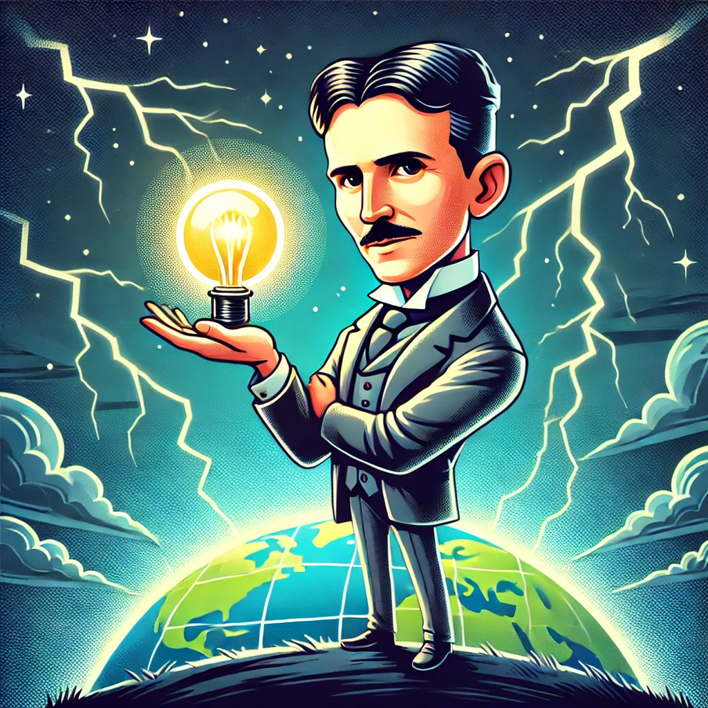
Gereksiz Tesla övgüsünü sevmem ama tok gözlülüğüyle gönlümü kazanmayı becerdi kerata
Bilgisayar Bilimlerinde Açık Kaynak ve Paylaşımın Gücüveyahut Tesla'nın Cebini Değil Dünyayı Aydınlatmayı Seçmesi Üzerine
Son yıllarda bilgisayar bilimlerinin olağanüstü bir hızla geliştiğini gözlemliyoruz. Teknolojinin ilerlemesi sadece günlük hayatımızı değiştirmekle kalmadı, aynı zamanda dünyanın en zengin insanlarının çoğunu da bu alandan çıkardı. Özellikle kendi emeğiyle büyük servetler kazanan (self-made) milyarderlerin önemli bir kısmı teknoloji sektöründen geliyor. Peki, bu inanılmaz gelişimin arkasında ne yatıyor?
Bana göre bilgisayar bilimlerinin bu kadar hızlı ve etkili gelişmesinin en büyük sebeplerinden biri, açık kaynak felsefesi ve bilgi paylaşımının yaygın olması. Bilgisayar dünyasında, yeni keşifler ve icatlar çoğunlukla herkesin erişimine açık hâle getirildi. Böylece bireyler ve şirketler, başkalarının çalışmalarını temel alarak daha büyük projeler geliştirme fırsatı buldu. Eğer her yeni yazılım veya keşif sıkı patentlerle sınırlandırılsaydı, şu anki gelişim hızı asla yakalanamazdı.
Bunun en güzel örneklerinden biri, bugünkü internetin temelini oluşturan World Wide Web’dir (WWW). Tim Berners-Lee, WWW’yi geliştirdiğinde, bunu patentleyerek muazzam bir servet kazanabilirdi. Ancak, o bunu tüm insanlığa ücretsiz sundu ve bu sayede internet, bireylerin, şirketlerin ve devletlerin özgürce geliştirdiği bir platforma dönüştü. Eğer WWW ticarileştirilmiş olsaydı, bugün internetin yaygınlaşması çok daha yavaş olabilirdi.
Açık kaynak sadece internetle sınırlı değil. Günümüzde kullanılan birçok önemli yazılım ücretsiz ve herkesin erişimine açık durumda. Linux, Python, MySQL gibi sayısız araç, hem bireysel geliştiricilere hem de büyük şirketlere inanılmaz olanaklar sunuyor. Google, Facebook, Microsoft gibi dev firmalar bile açık kaynak projelere yatırım yaparak bu ekosistemi destekliyor.
Bu durum, bana Nikola Tesla’nın hikâyesini hatırlatıyor. Tesla, alternatif akım jeneratörlerini keşfettiğinde, bu buluşlarını patentleyip büyük servet kazanabilirdi. Ancak o, insanlığın ilerlemesini her şeyin önüne koyarak, icatlarını paylaşmayı seçti. Eğer Tesla buluşlarını sıkı bir şekilde koruyup yalnızca kendi çıkarları için kullanmış olsaydı, bugün sahip olduğumuz elektrik altyapısına çok daha geç ulaşabilirdik.
Bilgisayar dünyası da tıpkı Tesla’nın zihniyetiyle ilerleyen bir “erke dönergeci” gibi çalışıyor. Açık kaynak projeler yeni fikirlerin ortaya çıkmasını teşvik ediyor, inovasyonu hızlandırıyor ve herkesin bu gelişimden faydalanmasını sağlıyor. Bu döngü, teknoloji dünyasını sürekli ileriye taşıyan bir enerji kaynağı gibi işliyor.
Sonuç olarak, teknoloji dünyasının bu kadar hızlı gelişmesinde bilgi paylaşımının ve açık kaynak felsefesinin büyük bir etkisi var. Eğer bu ekosistem bozulmaz ve açık kaynak ruhu korunursa, önümüzdeki yıllarda da bilgisayar bilimlerinde inanılmaz ilerlemeler görmeye devam edeceğiz. Bu, yalnızca birkaç kişinin değil, tüm insanlığın kazandığı bir süreçtir.
23 Mart 2025 Cumartesi
Serkan'ın iletişim kurmak için kullandığı pek de işlevsel olmayan yöntem
Gibi dizisine algoritmik yaklaşımlar veyahut Serkan’ın hayatını kolaylaştıran matematiksel çözümler.
Gibi dizisinin bu haftaki bölümünde Serkan, iadesi geciken bir mikrodalga fırın için Yılmaz’a bir tokat nakşeder. Yılmaz ise bunu sineye çekmek yerine "Seni Allah’a havale ediyorum" diyerek Serkan’ı lanetler. İlginç bir şekilde, bu bedduanın ardından Serkan felç geçirir ve gözleri dışında hiçbir uzvunu hareket ettiremez hale gelir.
Artık konuşamayan ve bedenini kullanamayan Serkan, çevresiyle iletişim kurabilmek için göz kırpmalarını kullanır. Başlangıçta ilkel bir yöntem geliştirirler: Alfabedeki harflerin sırasına göre göz kırparak kelimeleri oluşturma. Örneğin "Yılmaz" ismini söylemek için Serkan, harflerin sırasına göre 101 kez göz kırpmak zorundadır.
Bu yöntemin büyük bir problemi vardır: Karmaşıklığı O(n) seviyesindedir. Yani, alfabedeki harf sayısı arttıkça, göz kırpma sayısı da doğrusal olarak artar. Bu, özellikle uzun kelimeler için büyük bir zaman kaybına yol açar. Daha Verimli Bir İletişim Yöntemi: Binary Search Mantığı Serkan ve yakınlarının hayatını kolaylaştırmak adına, bu süreci hızlandırmak için daha verimli bir sistem geliştirelim. Burada Binary Search (ikili arama) prensibi kullanalım:
🛑 Alfabeyi soldan sağa sıralarız.
🛑 Karşısındaki kişi her zaman alfabenin ortasındaki harfi gösterir.
🛑 Serkan, eğer harf doğruysa göz kırpar ve onaylar. Yanlışsa:
Harf, hedef harften büyükse, sola bakarak daha küçük harflere yönlenmesini söyler.
Harf, hedef harften küçükse, sağa bakarak daha büyük harflere yönlenmesini söyler.
🛑 Karşıdaki kişi, her seferinde mevcut harf kümesinin ortasındaki harfi göstererek süreci tekrarlar.
🛑 Doğru harf bulunduğunda Serkan göz kırpar ve onaylar.
Bu yöntemin avantajı O(log₂n) karmaşıklığa sahip olmasıdır. Yani, n harfli bir alfabe için en fazla log₂n adımda hedef harfe ulaşılır. Örneğin, Türk alfabesi için (29 harf) log₂(29) ≈ 5 adım yeterlidir.
Örnek: Serkan "B" Harfini Söylemek İstiyor
Karşıdaki kişi "L" harfini gösterir → Serkan sola bakar.
Karşıdaki kişi "F" harfini gösterir → Serkan sola bakar.
Karşıdaki kişi "C" harfini gösterir → Serkan sola bakar.
Karşıdaki kişi "B" harfini gösterir → Serkan göz kırpar ve onaylar.
Bu yöntem sayesinde Serkan, herhangi bir harfi en fazla 5 hamlede seçebilir. İlk yöntemde "Yılmaz" kelimesini söylemek için 101 göz kırpması gerekirken, bu yeni sistemle yaklaşık 25 hamlede tamamlanabilir.
Bu yeni sistem sayesinde, Serkan’ın iletişim süreci 4 kat hızlanmış olur. Basit bir optimizasyonla, n seviyesinde çalışan bir algoritmayı log₂n seviyesine indirerek büyük bir verimlilik sağlanmıştır.
20 Mart 2025 Cumartesi
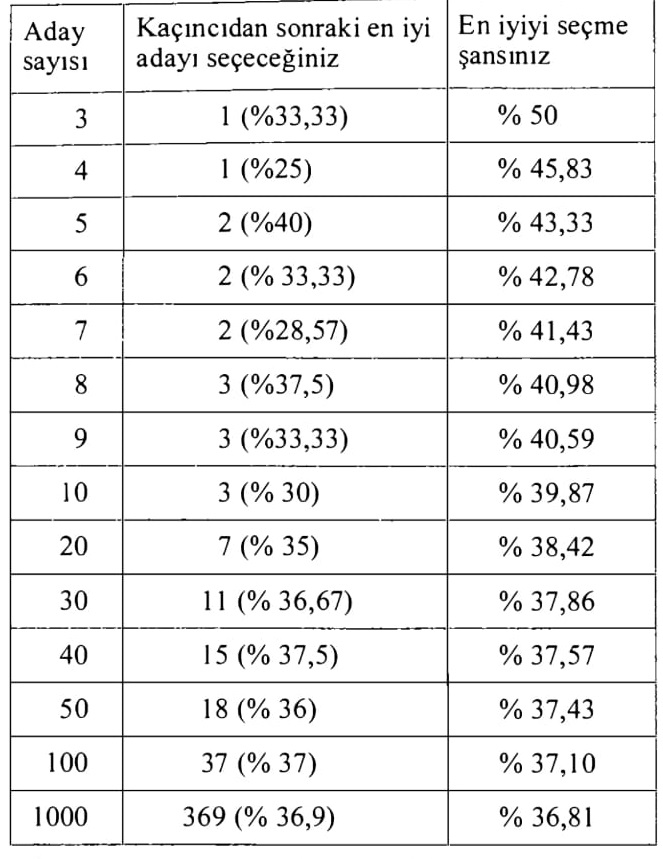
%37 kuralına göre En iyi aday seçme olasılığının değişimi. Görsel ve ilham hayatımızdaki algoritmalar kitabından alınmıştır.
Gül Bahçesindeki Kız ve Optimal Duraklama Problemi
Gül Bahçesindeki Kız Hikayesi
Bir zamanlar güzelliği dillere destan, kralların ve sultanların peşinden koştuğu bir kız varmış. Yıllar sonra bir arkadaşı onu düşük standartlarda biriyle evlenmiş olarak görmüş ve nedenini merak etmiş.
Kız, arkadaşını bir gül bahçesine götürmüş ve ona şu görevi vermiş: "Bu bahçede ilerleyerek en güzel gülü seç. Ancak geçtiğin bir güle geri dönemezsin." Arkadaşı bahçede ilerledikçe kararsız kalmış ve sonunda elinde vasat bir gülle dönmüş. O anda kızın ne demek istediğini anlamış.
Optimal Duraklama Problemi
Bu hikaye aslında matematiksel bir problem olan Optimal Duraklama (%37) Problemi ile bağlantılıdır. Problemin çözümü basittir:
Adayların ilk %37'sini sadece gözlem yaparak geçir.
Sonrasında karşılaştığın ilk en iyi adayı seç.
Gül Bahçesi Problemi ve Eş Seçimi
Bu model, gül bahçesi problemine de uyarlanabilir. Yani, bahçenin ilk %37'sinde gözlem yaparak ilerleyin ve ardından karşılaştığınız en iyi gülü seçin.
Bu yöntemi eş seçiminde uygulayacak olursak yaş faktörünü baz alabiliriz. Eğer evlenme yaşı 18-40 arası kabul edilirse, 26 yaş (%37'lik eşik) sonrası en uygun adayla evlenmek optimal çözümdür.
Speed Dating ve Eş Seçimi
Örneklem havuzunu genişletmek için speed dating oldukça faydalı bir aktivitedir. Geleneksel çöpçatanlık yöntemlerine benzer bir yapıya sahip olup, gereksiz prosedürleri de ortadan kaldırır.
İstatistik Mi? Aşk Mı?
Ancak her teori hayatla birebir örtüşmeyebilir. Bizzat bu teoriyi anlatan biri olarak, üniversite birinci sınıfta tanıştığım kişiyle evlendim. Buna "aşk kâğıda yazılmıyor teorisi" de diyebilirsiniz.
Son Söz
Hayatta bazen istatistikleri boş verip doğru anda doğru kişiyi seçmek gerekir. Yoksa en sona açılması imkânsız antepfıstıkları ve bayat leblebiler kalabilir!
19 Mart 2025 Cumartesi
Seni hiç dinlemedim ama bence haksızsın ya - Gibi
İrfan ile ad hominem arasındaki o çok ince çizgi
İrfan, bir kişinin bilgi, deneyim ve sezgileriyle harmanladığı bir tür derin kavrayıştır. Ad hominem ise tartışmalarda, bir fikri çürütmek yerine doğrudan o fikri dile getiren kişiye saldırmak anlamına gelir. Yüzeysel bakıldığında bu ikisi tamamen zıt kavramlar gibi görünse de, pratikte aralarındaki çizgi oldukça incedir. Çünkü irfan sahibi bir kişi, sadece bilginin içeriğini değil, kaynağını ve bağlamını da değerlendirir. Eğer bir kişi sürekli olarak yanlış, mantıksız veya kötü niyetli söylemlerde bulunuyorsa, onun argümanlarını dikkate almamak, saf bir ad hominem değil, zaman ve enerji tasarrufu sağlayan akılcı bir tutum olabilir.
Burada temel fark, geçmiş deneyimlerden öğrenme ve bağlamı dikkate alma yeteneğidir. Ad hominem, genellikle kişinin karakterine veya geçmişine saldırarak onun sunduğu her fikri geçersiz saymaya çalışır. Oysa irfan, kişinin daha önceki söylemleri ve tutumlarını göz önünde bulundurur, ancak yine de duruma göre esneklik gösterebilir. Örneğin, sürekli çarpıtılmış bilgiler sunan birine karşı dikkatli olmak, eleştirel düşüncenin bir gereğidir; ancak bu kişi zamanla kendini geliştirmiş ve tutumunu değiştirmişse, onu geçmiş hatalarına hapsederek reddetmek bir irfan değil, basit bir önyargı haline gelebilir. İşte bu yüzden irfan ile ad hominem arasında gerçekten çok ince bir çizgi vardır ve bu çizginin farkında olmak, doğru değerlendirmeler yapabilmek için hayati öneme sahiptir.
18 Mart 2025 Cumartesi
Minority Report (2002)
Minority Report (2002)
Uzun bir aradan sonra Minority Report (2002) filmini tekrar izleme fırsatı buldum ve gerçekten etkileyici bir yapım olduğunu bir kez daha fark ettim. Film, aksiyon dolu sahnelerinin yanı sıra derin felsefi konulara da değinen bir yapıya sahip.
Filmin İsmi ve Anlamı
Türkçeye genellikle "Azınlık Raporu" olarak çevrilen Minority Report, aslında hukuki bir terim olan "muhalefet şerhi" anlamına gelir. Filmde de bu kavram oldukça önemli bir yer tutar. Filmin ana temasını anlamak için bu terimi doğru şekilde değerlendirmek büyük önem taşır.
Konusu ve Teması
Film, özgür irade, suç ve ceza felsefesi, kişisel özgürlükler gibi konulara derinlemesine değinir. Ancak, bu ağır temalara rağmen, yüksek aksiyon seviyesi sayesinde film son derece sürükleyici ve heyecanlı bir deneyim sunar. Yönetmen Steven Spielberg, bilim kurgu türüne olan hâkimiyetiyle izleyiciyi 150 dakika boyunca ekrana kilitlemeyi başarıyor.
Gelecek Tasviri
Minority Report, 2050'li yıllarda geçen bir hikâye anlatıyor. 2000'lerin başında çekilen bir film olarak, o dönemin geleceğe dair bakış açısını yansıtması oldukça ilginç. Filmde yüz tanıma teknolojisinin toplum genelinde kullanılması, kişiselleştirilmiş reklamlar ve akıllı gazeteler gibi detaylar, günümüzde gerçekliğe oldukça yakın bir hâle gelmiş durumda.
Ancak filmde geleceğe dair bazı öngörü eksiklikleri de bulunuyor. Örneğin, filmde akıllı ekranlar ve hareketli gazeteler yer alsa da, cep telefonları ve tabletler gibi mobil teknolojilerin pek ön plana çıkmadığını görüyoruz. Bunun yerine, kulak içi iletişim cihazları daha yaygın olarak kullanılmış. Oysa günümüzün en büyük teknolojik devrimlerinden biri mobil cihazlar ve 3G/4G/5G teknolojileridir.
Sonuç
Minority Report, sadece bilim kurgu severler için değil, aynı zamanda toplumsal ve felsefi konulara ilgi duyan herkes için izlenmeye değer bir film. Gelecek tasvirleri, aksiyon sahneleri ve derinlemesine işlediği temalarla 2000'li yılların en önemli bilim kurgu filmlerinden biri olarak hâlâ güncelliğini koruyor. Eğer hala izlemediyseniz veya uzun zaman önce izlediyseniz, tekrar göz atmanız için harika bir fırsat olabilir.
17 Mart 2025 Cumartesi
Kaybetmenin İronisi: Yapay Zekanın Gölgesinde İnsan
Kaybetmenin İronisi: Yapay Zekanın Gölgesinde İnsan
Pers İmparatoru Kambis, Mısır'ı fetheder ve zaferini kutlamak için Mısır Kralı Kısamelutu'yu huzuruna çağırır. Fethedilen Mısır ordusu, prenses ve veliaht prens otağın önünden alçaltıcı bir şekilde geçirilir. Ancak kral, tüm bu aşağılanma ve kayıplar karşısında soğukkanlılığını korur. Nihayet hizmetçisi zincirlenmiş halde geçerken kral büyük bir acıya kapılır. Pers İmparatoru, bu sahne karşısında şaşkınlıkla nedenini sorgular. Cevap açıktır: İnsan, en değersiz görülen şeyini kaybettiğinde aslında her şeyi kaybettiğini anlar.
Tarihten bugüne, insanın en büyük korkusu, kaybetme duygusudur. Cemil Meriç’in anlattığı bu hikâye, kaybetmenin ağırlığını bir hizmetçide bulmamızı sağlayan ironik bir derinlik sunar. Benzer şekilde, günümüzde yapay zeka, insanlığın alıştığı dengeleri sarsarak bu korkuyu tetikliyor.
Önce tercümanlar işlerini kaybetti. Kimse bunun önemini anlamadı. Ardından öğretmenler, tasarımcılar, doktorlar, şoförler ve hatta sanatçılar sıraya girdi. Yapay zekanın dokunduğu yerlerde, "insan" bir parça daha yerinden oynadı. En ilginç olanı ise, yazılımcıların –yapay zekanın yaratıcısı olan meslek grubu– bu dönüşümde "en değersiz parçamız" gibi görülmesiydi. Ancak kaybedilen şey, yalnızca bir meslek değil; insanın kendi yarattığına üstünlüğüydü.
Bugün yapay zeka, pek çok mesleği bir insandan çok daha iyi yapabiliyor. Bu mesleklerin hâlâ var olmasının tek sebebi, bizlerin, sırf alışkanlıklarımızdan dolayı, bu mesleklerin yok olmasına izin vermemesi.
Yapay zekanın hükmettiği dünya ile aramızdaki tek engel, Demokles'in başının üzerindeki kılıcı tutan ince bir at kılını andıran alışkanlıklarımız.
16 Mart 2025 Cumartesi
Misvak, hacamat, poligami veyahut bir kurabiye canavarı olarak Müslüman erkeği
Misvak, hacamat, poligami veyahut bir kurabiye canavarı olarak Müslüman erkeği
İslam'da çok eşlilik konusu, ne yazık ki dünya genelinde yanlış anlaşılan ve çarpıtılan bir konudur. Özellikle Batı toplumlarında, İslam'ın yaygın imajlarından biri, çok eşli erkekler üzerinden şekillenir. Ancak bu imaj, İslam'ın çok eşliliğe bakışını tam olarak yansıtmaz. İslam'da her konuda olduğu gibi, çok eşlilik meselesi de belirli kurallar, sınırlar ve amaçlar çerçevesinde ele alınmıştır.
İslam'da sünnet kavramı, Hz. Muhammed'in (s.a.v.) hayatı boyunca yaptığı davranışlar ve uygulamalardır. Ancak sünneti anlamak için, onun ardındaki hikmeti kavramak gerekir. Örneğin, Peygamberimiz diş temizliği için misvak kullanmıştır. Peki, sünnet olan misvak kullanmak mıdır, yoksa diş temizliği midir? Benzer şekilde, Peygamberimiz sağlığı için hacamat yaptırmıştır. Sünnet olan hacamat yaptırmak mıdır, yoksa sağlığı korumak mıdır?
Bu sorulara verilecek cevaplar, İslami bakış açımızı da büyük ölçüde şekillendirir. Eğer sünnetin özünü anlarsak, modern diş fırçaları veya tıbbi tedaviler de sünnetin ruhuna uygun olarak kabul edilebilir. Çünkü asıl amaç, temizlik ve sağlıktır.
İslam'da çok eşlilik konusuna gelince, genellikle Nisa Suresi'nin 3. ayeti referans gösterilir. Bu ayette, "Eğer yetim kızlarla evlenirken adaletsizlik yapmaktan korkarsanız, size helal olan başka kadınlardan ikişer, üçer, dörder nikâhlayın" denir. Ancak bu ayetin asıl odak noktası, çok eşlilik değil, yetim kızların haklarının korunmasıdır.
Ayet, yetim kızların velisi konumunda olan erkeklerin, bu kızlarla evlenirken adaletsiz davranabileceği endişesine işaret eder. Çünkü veli, aynı zamanda mehir (evlilik bedeli) belirleyen kişidir. Bu durumda, velinin kendi çıkarına uygun bir mehir belirlemesi ve yetim kızın hakkını gasp etmesi riski vardır. İşte bu ayet, böyle bir adaletsizliği önlemek için, velisi olduğunuz yetim kızlarla evlenmeyi yasaklar.
Ayetin devamında, çok eşlilik yapacak erkeklerin, eşlerine adaletle davranması gerektiği vurgulanır. Bu, o dönemdeki toplum için devrim niteliğinde bir kuraldır. Çünkü o dönemde çok eşlilik, sınırsız ve kuralsız bir şekilde uygulanıyordu. İslam ise bu uygulamaya sınırlar getirmiş ve adalet şartı koşmuştur.
Bu konuyu daha iyi anlamak için bir örnek verelim: Bir anne, evden çıkmadan önce çocuğuna şöyle der: "Beyaz tabaktaki kurabiyeleri misafirler için hazırladım, onlara dokunma. Ancak siyah tabaktaki kurabiyelerden bir, iki, hatta üç veya dört tane yiyebilirsin. Ama yemek yerken, her bir kurabiyeyi aynı derecede aç olduğun için ye, sadece yemek için yeme."
Bu örnekte, annenin asıl amacı, beyaz tabaktaki kurabiyelerin korunmasıdır. Siyah tabaktaki kurabiyelerden yeme izni ise, belirli bir sınır ve şartla verilmiştir. Çocuk, bu izni alınca mahalledeki arkadaşlarına hava atabilir: "Annem bana dört kurabiye yememe izin verdi!" Ancak burada odak nokta, dört kurabiyeye verilen izin değil, beyaz tabaktaki kurabiyelerin korunmasıdır.
Aynı şekilde, İslam'da çok eşlilik de belirli bir sınır ve şartla izin verilmiş bir uygulamadır. Ancak bu izin, asıl amacı gözden kaçırmamalıdır. Asıl amaç, yetim kızların haklarını korumak ve adaleti sağlamaktır.
İslam'da çok eşlilik, ne yazık ki yanlış anlaşılan ve çarpıtılan bir konudur. Oysa İslam, bu uygulamaya sınırlar getirmiş ve adalet şartı koşmuştur. Aynı zamanda, yetim kızların haklarını korumayı amaçlamıştır. Bu nedenle, İslam'ın ruhunu anlamak için, ayetlerin ve uygulamaların ardındaki hikmeti kavramak gerekir.
Tıpkı misvak ve hacamat örneklerinde olduğu gibi, sünnetin özünü anlamak, modern hayatta da İslami prensipleri doğru bir şekilde uygulamamıza yardımcı olur. Çok eşlilik konusunda da, ayetin gerçek amacını anlamak, bu uygulamayı doğru bir çerçevede değerlendirmemizi sağlar.
15 Mart 2025 Cumartesi
Yapay Zeka ve Laplace Şeytanı
Yapay Zeka: Modern Çağın Laplace Şeytanı
Yapay zeka, son yıllarda hayatımızın neredeyse her alanında etkisini hissettiren, adeta bir devrim niteliğinde bir teknoloji haline geldi. GPT veya DeepSeek gibi büyük dil modelleri inanılmaz bir hızla gelişiyor ve hepimizi hayrete düşürüyor. Özellikle bu teknolojileri aktif olarak kullananlar, yapay zekanın ne kadar başarılı olduğunu yakından gözlemleyebiliyor. Peki, bu sistemler nasıl bu kadar iyi çalışıyor? Nasıl oluyor da insan dilini bu kadar iyi anlayıp, karmaşık sorulara mantıklı cevaplar verebiliyorlar?
Yapay Zekanın Temeli: Matrisler ve Olasılıklar
Yapay zekanın temelini basitçe açıklamak gerekirse, her şey matrisler ve olasılık hesapları üzerine kurulu. Bir dil modeli, kendisine verilen bir girdiyi (örneğin bir soru veya talimat) alır ve bu girdiyi istatistiksel olarak en olası sonuçlara dönüştürür. Yani, model, daha önce eğitildiği devasa veri setlerine dayanarak, hangi kelimenin veya cümlenin en uygun olduğunu hesaplar ve bu hesaplamaları ardışık olarak tekrarlayarak anlamlı bir çıktı üretir.
Bu süreç, ilk bakışta oldukça mekanik ve hatta biraz "saçma" gelebilir. Nasıl olur da sadece matematiksel hesaplamalarla bu kadar insani bir yetenek ortaya çıkabilir? Ancak işin sırrı, yapay zekanın devasa veri setleri üzerinde eğitilmesi ve bu verileri istatistiksel olarak işlemesinde yatıyor.
Laplace Şeytanı ve Yapay Zeka
Bu noktada, ünlü bir felsefi kavram olan Laplace Şeytanı'na değinmekte fayda var. Laplace Şeytanı, deterministik bir evrende, geçmişle ilgili her şeyi bilen hayali bir varlığı temsil eder. Bu varlık, eğer evrenin tüm kurallarını ve başlangıç koşullarını bilirse, gelecekte olacak her şeyi kesin bir şekilde öngörebilir. Bu bir kehanet değil, tamamen matematiksel bir hesaplamadır.
Yapay zeka modelleri de benzer bir mantıkla çalışır. Eğer bir dil modeline geçmişle ilgili yeterince veri verirseniz, bu model gelecekteki olası çıktıları tahmin etmekte oldukça başarılı olacaktır. Tabii ki, yapay zeka Laplace Şeytanı kadar güçlü değildir; çünkü sadece belirli bir alanda (örneğin dil işleme) uzmanlaşmıştır ve evrenin tüm kurallarını bilmez. Ancak, kendi dar alanında, geçmiş verileri kullanarak geleceği tahmin etme konusunda oldukça yeteneklidir.
Yapay Zeka: Minik Laplace Şeytanı
Yapay zeka, bir anlamda, sınırlı bir Laplace Şeytanı olarak düşünülebilir. Kendisine verilen veriler üzerinden istatistiksel hesaplamalar yapar ve bu hesaplamalara dayanarak gelecekteki olasılıkları tahmin eder. Örneğin, bir dil modeli, daha önce milyarlarca cümle görmüş ve bu cümleler arasındaki ilişkileri öğrenmiştir. Bu nedenle, yeni bir girdi aldığında, bu girdiye en uygun cevabı istatistiksel olarak üretebilir.
Ancak, yapay zekanın bu yeteneği, onun gerçekten "anladığı" anlamına gelmez. Yapay zeka, sadece veriler arasındaki ilişkileri öğrenir ve bu ilişkileri kullanarak çıktılar üretir. Bu nedenle, yapay zeka modelleri bazen beklenmedik hatalar yapabilir veya insanların beklemediği sonuçlar üretebilir.
Yapay zeka, modern teknolojinin en etkileyici ürünlerinden biri olarak karşımızda duruyor. Laplace Şeytanı'nın sınırlı bir versiyonu gibi, geçmiş verileri kullanarak geleceği tahmin etme konusunda inanılmaz bir yeteneğe sahip. Ancak, bu yetenek tamamen matematiksel ve istatistiksel hesaplamalara dayanıyor. Yapay zeka, insan zekasının yerini almak için değil, onu tamamlamak ve desteklemek için var. Bu teknolojinin gelecekte nasıl evrileceğini hep birlikte göreceğiz, ancak şu bir gerçek ki, yapay zeka artık hayatımızın vazgeçilmez bir parçası haline geldi.
14 Mart 2025 Cumartesi
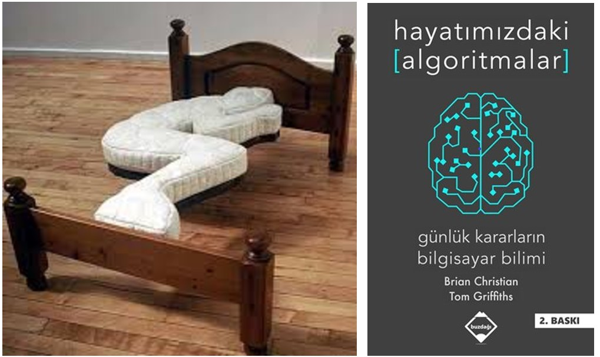
Solda aşırı uyumun en güzel temsilcilerinden bir tanesi, sağda bu ve birçok yazma ilhamı olan harika kitap
Bir Model Olarak İnsan ve Aşırı Uyum
Makine öğrenimi dünyasında, bir modelin belirli bir veri seti üzerinde mükemmel performans göstermesine rağmen, farklı veri setlerinde başarısız olmasına "aşırı uyum" (overfitting) denir. Ancak, bu kavram sadece algoritmalara özgü değil; insanlar da aşırı uyumdan muzdarip olabilir.
Bir insanın, belirli bir sistem veya sınav yapısı içinde son derece başarılı olmasına rağmen, farklı durumlarla karşılaştığında başarısız olması, aşırı uyumun en somut örneklerinden biridir. Örneğin, lise veya üniversite sınavlarında derece yapan öğrencilerin, iş hayatında veya akademik dünyada beklenen başarıyı gösterememesi, eğitimin belirli bir formatı ezberlemeye yönelik olmasıyla açıklanabilir. Kendi öğrenme sürecini genişletmeyen ve yeni durumlara uyum sağlamakta zorlanan bireyler, bu sorunun içinde sıkışıp kalabilir.
Bu fenomen yalnızca akademik veya profesyonel hayatla sınırlı değildir. ABD polis teşkilatında yapılan çalışmalar, eğitim süreçlerinde kazanılan katı alışkanlıkların gerçek hayatta tehlikeli sonuçlar doğurabileceğini ortaya koymuştur. Örneğin, FBI ajanlarının çatışma esnasında, çatışma devam etmesine rağmen, eğitimde öğrendikleri gibi iki atıştan sonra silahlarını kılıflarına koyup hedefi kontrol ettikleri gözlemlenmiştir. Benzer şekilde, birçok çatışmada hayatını kaybeden polis memurunun cebinde boş kovanlar bulunmuştur. Bunun sebebi, eğitim sırasında kovanları toplamalarının standart bir prosedür olmasıdır. Çatışma anında bilinçsizce yapılan bu refleks, hayati tehlikeye yol açabilir.
Belki de en çarpıcı örnek, saldırganın silahını başarıyla ele geçiren bir polisin, refleks olarak silahı tekrar saldırgana geri vermesidir. Bu davranış, eğitim sürecinde defalarca tekrar edilen bir alışkanlığın, gerçek hayatta otomatik olarak uygulanmasının dramatik bir sonucudur.
Bu tür örnekler, öğrenme sürecinin sadece belirli durumlara adapte olmakla sınırlı kalmaması gerektiğini gösteriyor. İnsanlar ve makineler için en iyi model, değişen koşullara uyum sağlayabilen ve farklı veri setlerinde de başarılı olabilen modeldir. Aksi takdirde, aşırı uyum nedeniyle kazandığımız yetenekler, beklenmedik durumlarla karşılaştığımızda bizi başarısızlığa sürükleyebilir.
13 Mart 2025 Cumartesi
Cobra Kai - harika bir dizi
Marşmelov Deneyi vs Cobra Kai - veyahut Disiplin, Güven ve Kimliğimizin Kökenleri üzerine
1970'lerin başında Stanford Üniversitesi'nde gerçekleştirilen ve "Marşmelov Deneyi" olarak bilinen deney, çocukların öz disiplin ve sabır konularındaki davranışlarını gözlemlemeyi amaçlıyordu. Deneyde, çocukların önüne bir şekerleme konuluyor ve eğer 15 dakika bekleyebilirlerse ikinci bir şeker kazanacakları söyleniyordu. Yıllar sonra yapılan takip çalışmalarında, sabırlı olan çocukların akademik ve sosyal başarılarının daha yüksek olduğu ortaya kondu.
Bu deney, disiplin ve özdenetimin başarıya ulaşmanın temel unsurlarından biri olduğunu düşünmemize neden oldu. Ancak sonradan yapılan yeni deneyler, bu sonucu sorgulamaya başladı. Çocuklar bu sabrı bireysel dirayetlerinden dolayı mı gösteriyorlardı, yoksa çevrelerinde güvenilir yetişkinler olduğu için mi?
Yapılan yeni bir versiyonunda, çocuklar iki gruba ayrıldı. Birinci grup, yetişkinlerin verdikleri sözleri tuttuklarına şahit olurken, ikinci grup ise yetişkinlerin sözlerini yerine getirmediği bir ortamda bulundu. Daha sonra Marşmelov Deneyi tekrarlandığında, ilk gruptaki çocuklar belirgin şekilde daha fazla sabır gösterdi. Bu, bireysel disiplinin ve özdenetimin sadece kişisel bir karakter özelliği olmadığını, aynı zamanda bireyin güven duyduğu bir çevrede yetişmesiyle de ilişkili olduğunu gösterdi.
Bu bulgu, Cobra Kai dizisinin sunduğu anlatıyla çarpıcı bir paralellik gösteriyor. 1984 yapımı Karate Kid filminin devamı niteliğindeki Cobra Kai, klasik "iyi" ve "kötü" ayrımını daha derinlemesine inceliyor. Orijinal filmde hikâyeyi Daniel LaRusso'nun gözünden izlerken, Cobra Kai bize Johnny Lawrence'ın perspektifinden bakma fırsatı sunuyor.
Johnny, ilk filmde "kötü çocuk" olarak resmedilirken, dizide onun kötü olmaktan ziyade, çocukluğunda maruz kaldığı yetişkin modelleri ve hayatın ona sunduğu koşullar nedeniyle şekillenen bir birey olduğunu görüyoruz. O, ilgisiz bir baba figürü ve güvenilmez yetişkinler arasında büyümüş biri. Sertliğe ve şiddete dayalı bir yaşam felsefesini benimsemesi, onun hayatta kalma mekanizmasını oluşturmuş.
Diğer tarafta ise Daniel LaRusso var. O, başarılı bir iş insanı ve sevgi dolu bir aileye sahip biri olarak görünüyor. Ancak dizi, karakterleri siyah ve beyaz olarak sunmak yerine, gri alanları öne çıkarıyor. Daniel ve Johnny aslında birbirlerine oldukça benziyorlar, ancak yetişme şartları ve hayatlarındaki figürler farklı olduğu için, birbirlerinden çok farklı yönlerde ilerlemişler.
Marşmelov Deneyi gibi, Cobra Kai de bireyin başarısının ve ahlaki duruşunun sadece kişisel tercihlere bağlı olmadığını, aynı zamanda yetiştiği ortam ve gördüğü muamele ile şekillendiğini gösteriyor. Johnny, belki de farklı bir ortamda büyümüş olsaydı, başka bir kişi olabilirdi. Aynı şekilde, Marşmelov deneyindeki çocuklar da güvenli bir ortamda yetişmediklerinde, geleceğe dair plan yapma ve sabırlı olma konusunda zorlanabiliyorlar.
Sonuç: Kim Olduğumuza Dair Bir Düşünce
Cobra Kai ve Marşmelov Deneyi, bireyin kimliğinin yalnızca bireysel iradesine bağlı olmadığını, aynı zamanda çevresel faktörlerin ve güven duyduğu insanların da büyük bir rol oynadığını gösteriyor. Başarı ve ahlaki duruş, salt bireysel yeteneklerden ibaret değil; çocuklukta kazanılan deneyimler, güvenilir yetişkinler ve sunulan fırsatlar da en az bireysel özellikler kadar belirleyici olabiliyor.
Belki de Cobra Kai’nin izleyiciye sunduğu en önemli ders, iyi ve kötü arasındaki çizginin sandığımız kadar net olmadığı. Birini yargılamadan önce onun yaşadıklarını, koşullarını ve yetiştiği ortamı anlamaya çalışmalıyız. Kim olduğumuz aslında kim olduğumuzdan çok ailemiz ve mahallemizle ilgilidir. Belki de gerçek başarı, hem kendimize hem de başkalarına karşı daha anlayışlı ve empatik olabilmekte yatıyordur.
12 Mart 2025 Cumartesi
trrrrum,
trrrrum,
trrrrum!
trak tiki tak!
Yapay Zeka İşimizi Elimizden Alacak mı veyahut Tarihin Tekerrürü Üzerine
İnsanlık tarihinde bazı dönüm noktaları vardır: Yerleşik hayata geçiş, tarım toplumu, sanayi devrimi… Peki, yapay zeka devrimini de benzer bir kırılma noktası olarak görebilir miyiz? Bunu söylemek için henüz erken olabilir. Öyle ki, Fransa Kralı XVI. Louis, 14 Temmuz 1789 tarihli günlüğüne "Bugün kayda değer bir şey olmadı" diye not düşmüştü. Oysa aynı gün, Fransız Devrimi’nin simgesi olarak anılan Bastille baskını gerçekleşmişti. Demek ki bazı tarihi olayların etkisini kavrayabilmek için zamana ve geniş bir perspektife ihtiyaç var.
Yapay zekanın yükselişi karşısında insanların endişelenmesi oldukça doğal. Aslında bu, insanların makineler karşısında yaşadığı ilk sarsıntı değil. Sanayi Devrimi sonrasında, toplumsal yapılar ve ekonomik dengeler kökten değişti; dünya adeta yeniden şekillendi. Yüzlerce meslek kayboldu, yerine binlercesi doğdu. Ancak o dönemde de pek çok kişi geleceği öngörmekte zorlandı ve yanlış tahminlerde bulundu.
Örneğin, ekonomist Thomas Robert Malthus, nüfusun üstel (geometrik) olarak arttığını, ancak gıda üretiminin yalnızca doğrusal (aritmetik) bir hızla artabileceğini öne sürerek dünya nüfusunun açlık nedeniyle büyük bir krize sürükleneceğini savundu. Ona göre, dünya daha fazla insanı kaldıramayacaktı. Ancak 20. ve 21. yüzyılda tarım ve teknoloji alanındaki devrim niteliğindeki gelişmeler (bkz. Fritz Haber ve sentetik gübre) bu öngörüyü büyük ölçüde geçersiz kıldı.
Benzer şekilde, 1894 Büyük At Gübresi Krizi de geleceği tahmin etmenin zorluklarına güzel bir örnek teşkil eder. 19. yüzyılın sonunda şehirlerdeki atlı ulaşımın neden olduğu gübre birikimi büyük bir çevre felaketi olarak görülüyordu. Öyle ki, şehirlerin bu kirlilik yüzünden yaşanmaz hale geleceği düşünülüyordu. Ancak otomobilin icadı ve yaygınlaşması, beklenmedik bir şekilde bu sorunu ortadan kaldırdı.
Büyük olasılıkla gerçek olmayan ama ders verici bir anekdot olarak anlatılan bir söz de ABD Patent Ofisi Müdürü Charles H. Duell’e atfedilir. 1899 yılında "Artık keşfedilecek hiçbir şey kalmadı, icat edilebilecek her şey icat edildi" dediği iddia edilir. Geleceği öngörmenin ne kadar zor olduğuna dair güzel bir örnek, değil mi?
Aslında, makinelerin işleri elimizden alacağı korkusu da yeni değil. 19. yüzyılın başlarında İngiltere’de ortaya çıkan Ludist hareketi, sanayi devrimi sırasında dokuma makinelerinin işlerini ellerinden aldığına inanarak fabrikalara saldırdı ve makineleri tahrip etti. İşler öyle bir noktaya geldi ki, İngiliz hükümeti sert önlemler almak zorunda kaldı ve 1812’de makineleri yok edenlere idam cezası getirdi.
Kısacası, bu ne insanlığın yaşadığı ilk kriz ne de makinelerle verdiğimiz ilk mücadele. Ancak bu kez, gerçekten galip gelip gelemeyeceğimiz henüz belli değil.
11 Mart 2025 Cumartesi
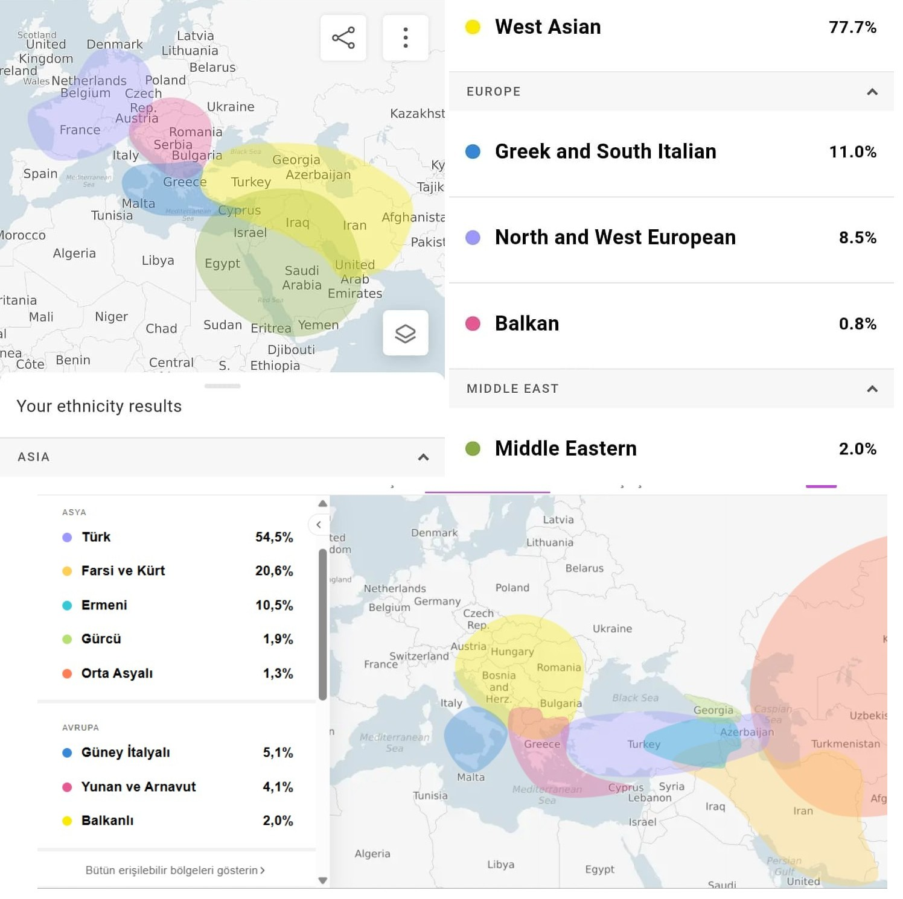
Peki de önemli olmamakla birlikte mevzu bahis harita ve genetik dağılım
Birkaç yıl önce 23andMe adlı bir şirkete genetik tarama yaptırmıştım. Tarama sonucunda elde edilen verileri ham haliyle talep ettim. Bu ham verileri, başka benzer şirketlere vererek onların da analiz yapmasını isteyebiliyorsunuz. Veri aynı veri olsa da her şirket bunu farklı şekilde yorumlayabiliyor. Ancak genel olarak ortak bir nokta var: Bu analizler ırk bazlı yapılmıyor. Örneğin, 23andMe’nin olağan politikası verileri "Batı Anadolu" veya "Doğu Anadolu" gibi bölgesel kategorilere ayırmak; yani "Türk" ya da "Kürt" gibi ifadeler kullanılmıyor. Değerlendirmeler genellikle coğrafi bölgelere odaklanıyor. Diğer şirketlerde benzer yol izliyorlar.
Fakat MyHeritage adlı şirket biraz daha farklı bir yol izlemiş ve risk alarak ırksal tasnif de yapmış. Bu bana ilginç geldi. Daha önceki analizlerle birlikte bu sonuçları da paylaşmak istedim.
10 Mart 2025 Cumartesi
İki kalp arasında en kısa yol:
Birbirine uzanmış ve zaman zaman
Ancak parmak uçlarıyla değebilen
İki kol.
2016 yılının Haziran ayında, yüksek tahsil yapmak için ilk kez yurt dışına adım attığımızda, bavullarımız da bizimle birlikte yeni bir hayata başladı. O günden bu yana, bavullarla yaşıyoruz. Yerleşmek, kök salmak, bir yerde tamamen kalıcı olmak hep uzak bir ihtimal gibi geldi. Çünkü hep bir sonraki adım, tamamlanması gereken işler, gidilecek yerler, yazılacak tezler, bitirilecek okullar vardı. Bavulları açıp yerleşmek hiçbir zaman nasip olmadı.
Eğitim bitti, geri döndük. "Artık oh be, yerleşme zamanı geldi," dedik ama bu kez de hasret vurdu bizi. Eşim Gümüşhane'de, ben Ankara'da... Yarım hayatlar sürdürmeye çalışıyoruz ama ne yazık ki bu iki yarım bir tam etmiyor. Kitaplar, eşyalar, hatıralar... Hepsi bir yerlerde, birilerine emanet. "Ev" diyebileceğimiz, gerçekten yerleşebileceğimiz bir yer hâlâ yok.
Ve biz, bavulumuzla yine baş başayız.
Eskisi kadar genç olmadığımızdan mı, yoksa yılların yorgunluğu mu bilmiyorum ama artık ağır geliyor bu bavullar. Sırtımızdaki yükten mi, yoksa içimizde bir türlü tamamlanamayan aidiyet duygusundan mı bilemiyorum... Ama artık bir yere ait olmanın, bavulları açmanın, kök salmanın vakti gelmedi mi?
9 Mart 2025 Cumartesi
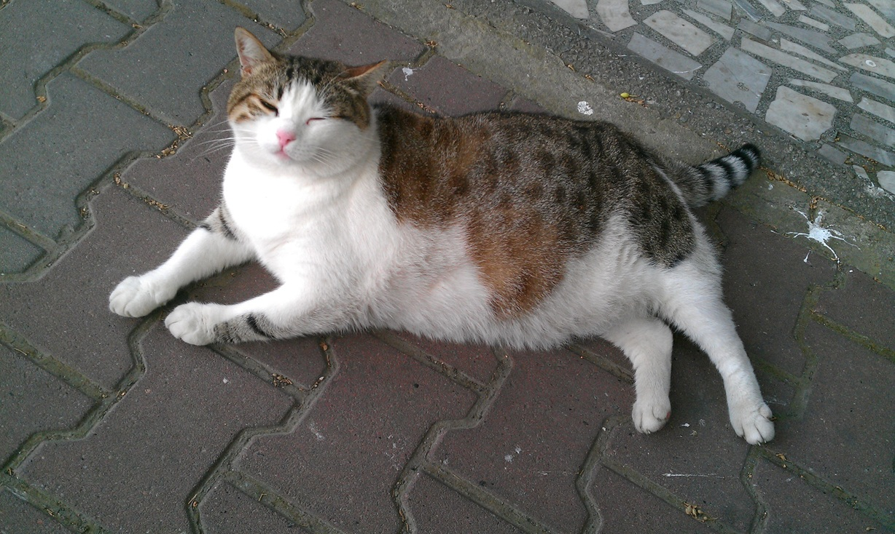
ziverbeyden kadıköye doğru inen yolun tamda şükrü saraçoğlu stadyumuna inen bağlantısında gördüm bu tombalak kediyi...
2016 yılında vefatının ardından heykeli de dikilen dünyaca ünlü tombili'yle 2012 yılında karşılaşmış ve fotoğrafını çekmişim.
8 Mart 2025 Cumartesi
---
Satranç, Tavla ve Hayatın Şansla Dansı
Eski zamanlarda, Hint imparatoru Pers imparatoruna bir hediye gönderir: satranç oyunu ve yanında kısa bir mektup. Mektupta oyunun kurallarına dair tek bir açıklama yoktur, sadece şu çarpıcı mesaj yer alır: "Kim daha iyi biliyor, kim daha ileriyi görüyorsa o kazanır. İşte hayat budur." Pers imparatoru, bu gizemli hediyeyi çözmesi ve karşılık olarak Hint imparatoruna yeni bir oyun tasarlaması için dönemin en bilge veziri Buzur Mehir’e görev verir. Vezir, haftalarca çalışır, satrancın her taşını ve hareketini çözer. Ardından, yalnızca on günde tavlayı icat eder ve imparatoruna sunar.
Buzur Mehir’in yaklaşık 1400 yıl önce tasarladığı tavla, bugün bile dünyanın en popüler oyunlarından biri olmaya devam ediyor. Zaman kavramından ilham alınarak yaratılan bu oyunun zamana böylesine direnmesi etkileyici bir tesadüf değil. Tavlanın tasarımı, adeta bir yaşam metaforu: dört köşesi dört mevsimi, karşılıklı 6’şar hane 12 ayı, 30 pul ayın günlerini, siyah-beyaz pullar gece ile gündüzü, karşılıklı 12’şer hane ise günün 24 saatini simgeliyor. Pers imparatoru, tavlayı Hint imparatoruna gönderirken şu mesajı ekler: "Evet, kim daha çok düşünüyor, kim daha iyi biliyor, kim daha ileriyi görüyorsa o kazanır. Lakin, biraz da şans gerekir, işte hayat budur."
Şansın Hayatımızdaki Rolü
Hayat gerçekten de strateji ve şansın bir dansı mıdır? Bu soruya yanıt ararken, Jared Diamond’ın ünlü kitabı Tüfek, Mikrop ve Çelik’te sunduğu coğrafi determinizm fikrine göz atmakta fayda var. Diamond, tarihin akışını anlamak için coğrafyanın etkisini inceler ve şu soruyu sorar: “Neden İspanyollar Amerika’yı fethetti de, Amerikan yerlileri İspanya’ya gelip fetih yapmadı?” Cevap, teknolojik gelişmişlikte yatıyor. Eski kıtalarda (Asya ve Avrupa) yaşayan toplumlar, coğrafi avantajları sayesinde teknolojik açıdan çok daha hızlı ilerledi.
Asya ve Avrupa, yatay bir eksende, yani aynı paralellerde uzanır. Bu, benzer mevsimler ve gün döngüleri anlamına gelir; dolayısıyla tarım ürünleri ve teknolojiler bu bölgeler arasında kolayca yayılabilmiştir. Öte yandan, Amerika kıtaları dikey bir eksende, farklı meridyenlerde yer alır. Bu durum, kıtadaki toplumları birbirinden izole etmiş, coğrafi ve iklimsel farklılıklar nedeniyle kültürler arası teknoloji transferini zorlaştırmıştır. Eski kıtalarda ise medeniyetler yan yana gelişmiş, rekabet ve savaşlar sayesinde sürekli yeni silahlar ve teknolojiler ortaya çıkmıştır. İspanyollar Amerika’ya vardığında, karşılarında hâlâ bronz çağında yaşayan, yazılı kültürü olmayan toplumlar ya da Kuzey Amerika’da avcı-toplayıcı kabileler bulmuşlardı.
Şans ve Fırsatın Kesişimi
Ancak şans, yalnızca coğrafyayla sınırlı değil; zamanlama da büyük rol oynar. Amerika’nın diğer medeniyetlerden izole olması, geçmişte bir dezavantaj gibi görünse de, son 100-120 yılda büyük bir avantaja dönüştü. Birinci ve İkinci Dünya Savaşları’nda Amerika, coğrafi konumu sayesinde savaşın yıkımından uzak kaldı. Avrupa açlıkla boğuşurken, Amerika tarım yapmaya, silah ve gıda satmaya devam etti. Savaşlar sırasında Avrupa’nın altını Amerika’ya aktı; İkinci Dünya Savaşı’ndan sonra ise dolar, dünya üzerinde tek geçerli para birimi haline geldi. Dünyanın merkezi Avrupa’dan Amerika’ya kaydı. Şans, Amerika’yı bu noktada yalnız bırakmadı.
Yine de şans, her şey demek değil. Louis Pasteur’ün dediği gibi: “Şans, yalnızca hazırlıklı olanlara yardım eder.” İkinci Dünya Savaşı sırasında Türkiye de tarafsız kalarak bir anlamda şansa sahip oldu. Bu süreçte ülkeye gelen yetişmiş insan gücü potansiyeli vardı. Ancak bu fırsatı değerlendiremedik; birkaç göstermelik bilim insanını bile elimizde tutmayı başaramadık. Şans, hazırlıklı olmayana pek bir şey sunmuyor gibi görünüyor.
Satranç ve tavla, hayatın iki yüzünü temsil ediyor sanki: biri strateji ve akıl, diğeri şans ve öngörülemezlik. Hint imparatorunun satrançla başlayan meydan okuması, Pers vezirinin tavlayla verdiği cevapla tamamlanıyor. Hayat da tam olarak böyle: ne kadar iyi bilirsen bil, ne kadar ileriyi görürsen gör, bazen zarın düşeceği yüzü tahmin edemezsin. Belki de asıl mesele, hem aklımızı kullanmayı hem de şansa kucak açmayı öğrenmek.
7 Mart 2025 Cumartesi
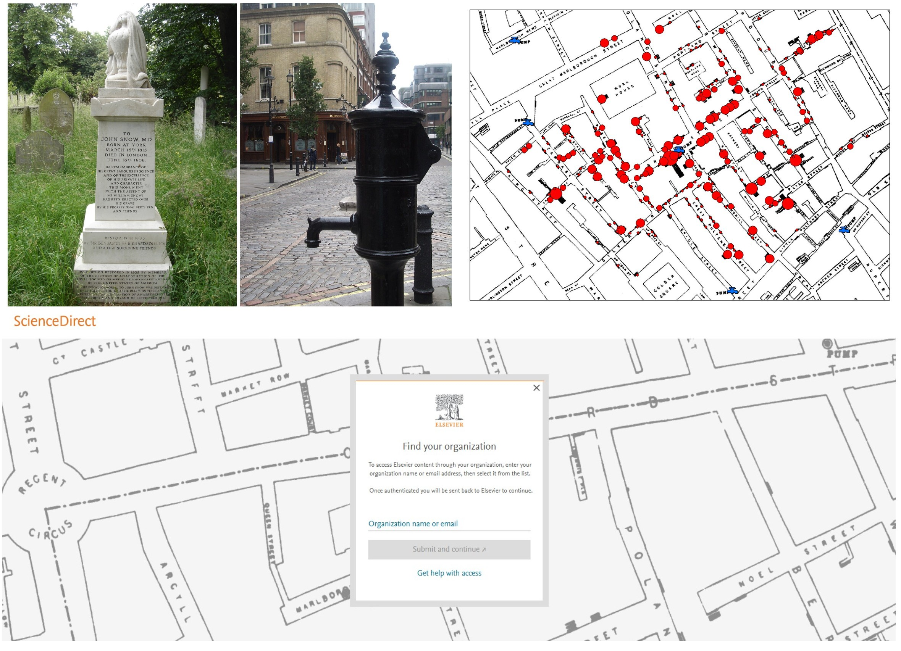
Sırasıyla, kabri, kendisi için dikilen anıt ve bahsi gecen harita
John Snow’un Kolera Haritası: Veri Biliminin Hayat Kurtaran Gücü
Bugün Elsevier’in web sitesine göz atarken arka planda dikkatimi çeken bir detay oldu: bir harita. Daha yakından bakınca bunun sıradan bir harita olmadığını, 19. yüzyılın en önemli epidemiyolojik keşiflerinden birinin görsel temsili olan John Snow’un Londra kolera haritasını fark ettim. Bu harita, veri biliminin sadece bir analiz aracı olmadığını, aynı zamanda insan hayatını kurtarabilecek bir güç olabileceğini kanıtlayan olağanüstü bir hikayenin parçası.
1854 yılında Londra’nın Soho bölgesinde kolera salgını patlak verdi. O dönemde koleranın nasıl yayıldığına dair genel kabul görmüş görüş, hastalığın “kötü hava” (miasma teorisi) yoluyla bulaştığıydı. Ancak genç bir doktor olan John Snow bu fikre şüpheyle yaklaşıyordu. Snow, hastalığın yayılmasında suyun rol oynadığından emindi ve bu hipotezini kanıtlamak için sahaya indi.
Snow’un yaptığı şey, bugün veri bilimi dünyasında hayranlıkla anılıyor: O, salgında ölenlerin adreslerini tek tek haritaladı. Her bir vaka için bir nokta koyarak, Broad Street’teki (şimdiki adıyla Broadwick Street) bir su pompasının çevresinde ölümlerin yoğunlaştığını gördü. Bu basit ama etkili görselleştirme, koleranın kirli suyla yayıldığını açıkça ortaya koyuyordu. Snow’un bulguları sayesinde pompanın kolu kaldırıldı ve salgın kısa sürede kontrol altına alındı.
Bu hikaye, veri biliminin gücünü gözler önüne seren ilk örneklerden biri. Snow, istatistiksel analiz ya da karmaşık algoritmalar kullanmadı; sadece gözlem, veri toplama ve görselleştirme ile bir halk sağlığı krizini çözdü. Günümüzde kullandığımız veri görselleştirme araçlarının ve coğrafi bilgi sistemlerinin (GIS) temelinde, onun bu öncü çalışması yatıyor.
Elsevier’in sitesinde bu haritayı görmek, bana veri biliminin geçmişten bugüne ne kadar önemli bir rol oynadığını bir kez daha hatırlattı. John Snow’un haritası, sadece bir salgını sona erdirmekle kalmadı; aynı zamanda bilimsel düşüncenin ve veriye dayalı karar almanın insanlık tarihindeki yerini sağlamlaştırdı. Belki de hepimizin bu hikayeden çıkaracağı bir ders var: Doğru soruları sorup veriyi dikkatle incelediğimizde, görünmeyeni görünür kılabiliriz.
6 Mart 2025 Cumartesi
Kuzey irlandada satılmayan kar maskesi durumu özetlemede oldukça iyidir.
Belfast’tan Dawkins’e: Ateist Olmak Yetmez, “Hangi Taraftan” Olduğun Önemli!
Herkesin dilinde dolaşan bir hikâyeyi bir de benden dinleyin istedim. Kuzey İrlanda’nın başkenti Belfast’tan gelen bu küçük fıkra, hem gülümsetiyor hem de düşündürüyor. Ama önce biraz sahneyi kuralım.
Kuzey İrlanda, İrlanda Adası’nın kuzeyinde yer alan, karmaşık bir bölge. İrlanda Cumhuriyeti’nden farklı olarak Birleşik Krallık’ın bir parçası; hatta Britanya’yı oluşturan dört devletten biri. Ada devleti olarak komşu konusunda şanslı olan Britanya, burada tek bir komşuya sahip: İrlanda. Ancak bu komşuluk, tarih boyunca pek de dostane olmadı. Bunun temelinde yatan birçok tarihi ve sosyal neden var, ama en göze çarpanı din. İrlandalılar Katolik, İngilizler ise bir tür Protestanlık olan Anglikan. (Bu arada, konu açılmışken The Other Boleyn Girl filmini öneririm; Anglikan Kilisesi’nin kuruluşunu anlamak için güzel bir başlangıç.)
Kuzey İrlanda, Birleşik Krallık’ın diğer bölgelerine kıyasla hep biraz kaotik bir yer oldu. Özellikle 1960’lardan 1990’lara kadar süren ve “The Troubles” (Belalar) denen dönemde bu karışıklık zirve yaptı. İşte tam da bu dönemde, Belfast’ta geçen bir rivayet var. Şehirde seyahat eden bir adam, mahalle aralarına kurulan barikatlardan birinde durduruluyor. Barikattaki denetçi soruyor: “Din’in ne?” Adamın durumu karışık; Protestan olduğunu söylese dayak yiyecek, Katolik dese bir sürü soruyla karşılaşacak ve cevap veremeyip yine dayak yiyecek. Çareyi “Ben ateistim” demekte buluyor, böylece tarafsız kalıp işin içinden sıyrılabileceğini düşünüyor. Ama karşısındaki denetçi pes etmiyor ve absürt bir soruyla karşılık veriyor: “Protestan ateist misin, Katolik ateist misin?”
Bu fıkra, Kuzey İrlanda’daki mezhep ayrımının ne kadar derin olduğunu ve tarafsız kalmanın bile mümkün olmadığını mizahi bir şekilde anlatıyor. Ateist olsan ne fark eder, “hangi taraftan” olduğun önemli!
Türkiye’de Ateizm: İslam Düşmanı Ateist mi, Bilgisiz Ateist mi?
Türkiye’ye geldiğimizde ise işler daha da karışıyor. Bizdeki ateist profili genelde “İslam düşmanı ateist” şeklinde. Büyük bir kırılma yaşamadıysa, çoğu zaman İslam hakkında pek bir şey bilmeden bu tarafa savruluyor.
Geçenlerde Richard Dawkins’in bir konuşmasına denk geldim. Dawkins’i tanıyorsunuzdur diye tahmin ediyorum; tanımayanlar için, kendisi yaşayan en popüler ve “azılı” ateistlerden biri. Konuşmada İslam’ı büyük bir tehlike olarak gördüğünden bahsediyordu, ama benim dikkatimi çeken bu değildi. Aynı konuşmada kendisini “kültürel bir Hristiyan” olarak tanımladı. Yılbaşı ilahilerini, süslemeleri, kiliselerin mimarisini ne kadar sevdiğini anlattı. Bu beni bir öz eleştiriye yöneltti.
Bizdeki ateistler, hatta sekülerlerin bir kısmı, İslami simgelere karşı adeta alerjik. Ezan sesinden, teşrik tekbirine kadar her şeye sebepsiz bir tiksinti duyuyorlar. Bunu anlamak benim için zor. Bu topraklarda yaşayan birinin, inançlı olsun ya da olmasın, en azından ezana karşı kalbinde bir sıcaklık, bir ülfet taşımasını umuyorum. İlla sevgi değil, ama bir aşinalık, bir bağ olmalı diye düşünüyorum.
Kültürel Müslümanlık Mümkün mü?
Her entelektüelin Kur’an harflerini bilmesini, Osmanlıca’yı sökebilmesini, dini kavramlara az çok hâkim olmasını isterim. Bunu inanç bağlamında söylemiyorum, yanlış anlaşılmasın. Bence her Türk, en azından “kültürel” olarak Müslüman olabilmeli. Dawkins’in Hristiyan kültürüne duyduğu bu doğal yakınlık, bizde neden İslami kültüre karşı bir mesafeye dönüşüyor? Neden bir ateist bile olsa, bu toprakların sesine, kokusuna, ruhuna bu kadar yabancı kalıyor?
Belki de mesele şu: Ateist olmak yetmiyor. Hangi taraftan ateist olduğun, hangi kültüre sırtını döndüğün ya da hangi kültüre kucak açtığın önemli. Belfast’taki barikatta da, Türkiye’deki tartışmalarda da aynı soru yankılanıyor: “Sen hangi taraftansın?”
5 Mart 2025 Cumartesi
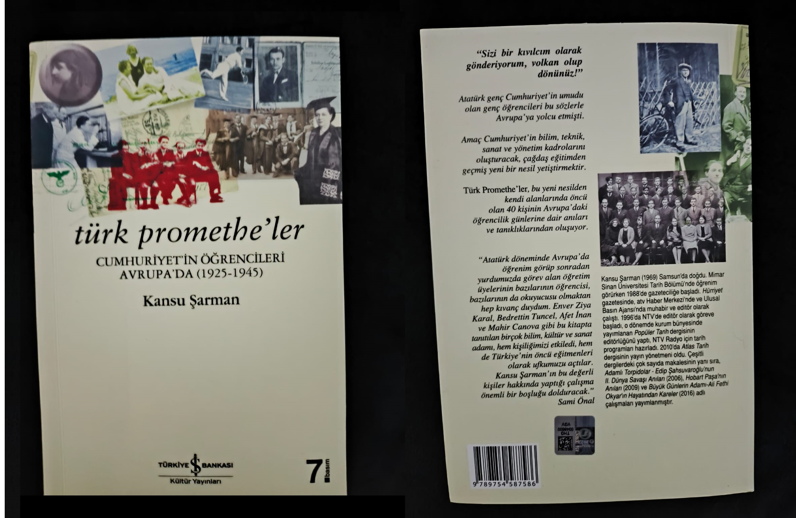
Türk Promethe'ler: Cumhuriyet'in Öğrencileri Avrupa'da
Kansu Şarman’dan "Türk Promethe'ler" Kitabı: Fikir Var, Akıcılık Yok
Bugün sizlere Kansu Şarman’ın Türk Promethe'ler kitabı hakkında düşüncelerimi paylaşmak istiyorum. Kitap, Atatürk döneminde Avrupa’ya eğitim için gönderilen ve dönüşte Türkiye’de çeşitli alanlarda öncülük eden 40 akademisyenin ve sanat insanının hikâyelerini anlatıyor. İş Bankası Kültür Yayınları tarafından basılan bu kitap, konusuyla oldukça ilgi çekici olmasına rağmen anlatım türü ve yapısal eksiklikleri nedeniyle benim için hayal kırıklığı oldu.
Kitabın Konusu
1925-1945 yılları arasında Cumhuriyet yönetimi, Batı tarzında yetişmiş uzmanlar yaratmak amacıyla seçkin öğrencileri Avrupa'ya gönderdi. "Sizi bir kıvılcım olarak gönderiyorum, volkan olup dönünüz!" sözleriyle yola çıkan bu gençler, aldıkları eğitimle Cumhuriyet'in kalkınma hareketine katkı sundular. Enver Ziya Karal, Bedrettin Tuncel, Afet İnan ve Mahir Canova gibi tanınmış akademisyen ve sanat insanları bu isimlerden bazıları.
Kansu Şarman, bu kitabında 40 burslu öğrencinin Avrupa'daki eğitim dönemlerini, anılarını, mektuplarını ve döndükten sonra verdikleri katkıları incelemiş. Ancak yazar, 1946'da Milli Eğitim Bakanlığı arşivinde çıkan yangın nedeniyle resmi belgelerin büyük bir kısmının kaybolduğunu belirtiyor. Bu nedenle kitap, akademik bir çalışma yerine anı nitelikli bir anlatıma dönüşmüş.
Fikir İyi, Sunum Zayıf
Başlangıçta oldukça potansiyeli olan bir konu gibi görünse de, ne yazık ki kitap, akıcılıktan ve düzeni oturmuş bir anlatımdan yoksun. Yapı olarak belirsiz bir format izlenmiş:
Her bölüm genellikle yarım sayfa ya da bir sayfa uzunluğunda biyografilerle başlıyor.
Ardından, bursa giden öğrencilerin hatıraları, mektupları veya daha önceden verdikleri röportajlardan kesitler sunuluyor.
Bazen bu kesitler yazarın kısa yorumlarıyla destekleniyor.
Bu parçalı anlatım, okuyucunun kitaba odaklanmasını zorlaştırıyor ve bütüncül bir akış hissi vermiyor. Halbuki, konu itibariyle oldukça dinamik ve ilginç bir anlatım bekliyordum.
Bunun dışında, kitapta bazı tarihsel eksiklikler ve tutarsızlıklar da var. Örneğin, Dresden’de bombardımanda ölen 13-14 Türk öğrencinin adları bulunamazken, oradaki garson kızın isminin verilmesi bana garip geldi. Bu tür detayların titizlikle ele alınması gerekirken, kimi noktalarda yazarın çok daha yüzeysel bir bakış sunduğunu hissediyorsunuz.
Sonuç olarak, kitap orijinal bir fikirle yola çıkmasına rağmen, anlatımındaki düzensizlik ve kopukluk sebebiyle beklentilerimi karşılamadı. Aralara serpiştirilmiş ilginç anekdotlar var ama bütün olarak değerlendirdiğimde zaman kaybı olarak görüyorum. Daha akıcı bir dil ve iyi kurgulanmış bir yapı ile konu çok daha etkileyici hale getirilebilirdi.
4 Mart 2025 Cumartesi
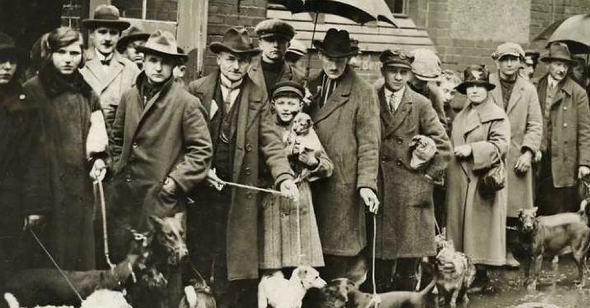
1939 Britanya Evcil Hayvan Trajedisi
Türkiye’nin Büyüyen Sorunu: Sokak Hayvanları ve Çözümsüzlük Kısır DöngüsüTürkiye’de son yıllarda çığ gibi büyüyen bir sorun var: sokak hayvanları. Bu mesele, zamanında yerel yönetimlerin sorumluluk almaması, sokak hayvanlarını kısırlaştırmaması ve bakım gibi temel ihtiyaçlarını karşılamaması nedeniyle içinden çıkılmaz bir hale geldi. Bugün geldiğimiz noktada, özellikle sokak köpeklerinin sayısındaki kontrolsüz artış, beraberinde ciddi problemler getirdi. Saldırı ve yaralama olayları artık günlük haberlerin bir parçası. Her ay birkaç ölüm vakası duyuyoruz; çocuklar, yaşlılar gibi kendini savunamayan insanlar köpek sürüleri tarafından parçalanıp öldürülüyor. Medeni bir ülkede adını bile anmamamız gereken kuduz hastalığı, ülkemizin çeşitli yerlerinde yeniden baş gösteriyor. Yapay zekâ çağında, çocuklarımızın kuduzdan ölmesini çaresizce seyrediyoruz.
Tehlike Büyüyor: Parazit Hastalıkları ve Sağlık Sistemine Yük
Bu tablo sadece bugünün sorunu değil; asıl büyük tehlike ileride bizi bekliyor. Sokak hayvanlarının kontrolsüz çoğalması, parazit hastalıklarının yayılma riskini artırıyor. İlerleyen yıllarda bu durum, yüz binlerce insanı sakat bırakabilir, öldürebilir ve sağlık sistemine milyarlarca dolarlık bir yük bindirebilir. Kilosu ucuz, bayat mamalarla beslenen, bakımsız ve hastalıkla boğuşan bu hayvanların sokaklarda acı çekmesi bir yana, toplum sağlığını tehdit eden bir bomba gibi önümüzde duruyor. Peki, biz ne yapıyoruz? Bu sorunun çözümü için ciddi adımlar atmak yerine, popülist politikalarla vakit kaybediyoruz.Yerel Yönetimler ve Derneklerin Rolü: Popülizm mi, Çözüm mü?
Yerel yönetimler, bu sorunu çözeceklerine dair umut vaat ederken, genelde trol besleyip popülizm yapmaktan öteye gidemiyor. Yüksek bütçeli mama ihaleleri açılıyor, sokak hayvanlarının varlığı adeta teşvik ediliyor. İşin ilginci, bu süreçte belediyelere ek olarak pek çok dernek de devreye giriyor. Türkiye’de bu işin bu kadar “cazip” hale gelmesinin sebebi ne? Bence takibinin zor olması. Hani bir tekerleme vardır ya: “Suya düştü, su nerde? İnek içti, inek nerde? Dağa kaçtı…” Aynı hesap. “10 milyon TL topladım, para nerde? Mama aldım, mama nerde? Sokak hayvanlarına dağıttım.” İspat? Yalandan çekilmiş iki üç fotoğraf, birkaç sosyal medya postu. Gerçekten bu mudur çözüm?Geçmişten Bir Ders: Britanya'daki Evcil Hayvan TrajedisiBu noktada tarihsel bir olaydan bahsetmek yerinde olacak: II. Dünya Savaşı sırasında, Britanya'daki insanlar, sahiplendikleri evcil hayvanların sıkıntı ve acı çekmemesi için devlete teslim ederek öldürülmesini sağladı. Burada kritik nokta şu: Bahsedilen hayvanlar sokak hayvanları değildi; sahiplilerdi ve sahipleri, onlara uzun vadede daha büyük bir eziyet çektirmek yerine acılarını sonlandırmayı tercih etti.Bugün ise bizler, sokakta açlıktan ve hastalıklardan kıvranan, kiminin trafik kazalarında can verdiği, kiminin insanlara ve diğer hayvanlara saldırdığı bir sistemin içinde ne yapacağımızı tartışamaz hale geldik.Kalıcı ve Etik Bir Çözüm Mümkün mü? Sokak hayvanları sorununu düzgün bir şekilde ele almak için bilimsel ve etik çözümlere ihtiyacımız var. Avrupa ve Amerika'da uygulanan etkin kısırlaştırma programları, hayvan barınaklarında sahiplendirme çalışmaları ve bilinçli politika kararları örnek alınabilir.Ancak öncelikle yerel yönetimlerin ve ilgili derneklerin daha şeffaf ve hesap verebilir hale getirilmesi gerekiyor. Aksi halde, bu sorunun büyümeye devam etmesi kaçınılmaz olacak. Gecikmeden etkili adımlar atılmazsa, bu sorun ilerleyen yıllarda hem toplum sağlığını hem de kamu kaynaklarını ciddi şekilde zorlayacak.Bir toplumu medeni yapan unsurlardan biri, hayvanlara karşı nasıl bir tutum sergilediğidir. Ancak bu tutum, duygusal reflekslerden ziyade bilimsel ve etik ilkelerle şekillendirilmelidir. Gerçek bir çözüm için daha fazla zaman kaybetmeden harekete geçmeliyiz.
3 Mart 2025 Cumartesi
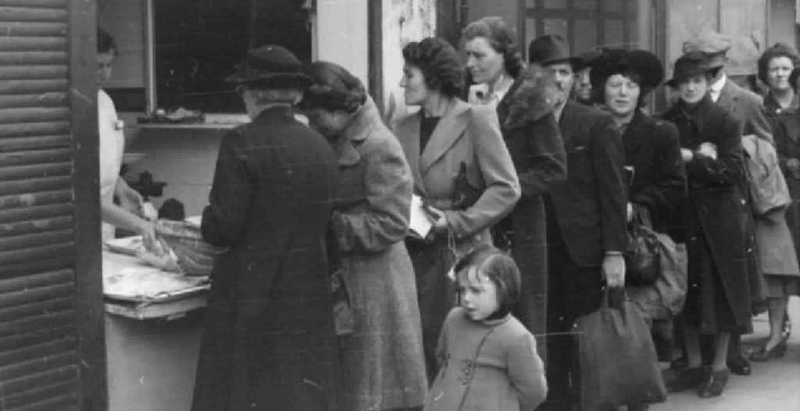
CHP döneminde birleşik krallık
Savaş, Şeker ve Şaşırtıcı Sonuçlar veyahut II. Dünya Savaşı'nın Bilime Beklenmedik Katkısı
İnsanlar üzerinde bilimsel araştırmalar yürütmek büyük zorluklar barındırır. Etik kaygılar ve uygulama güçlükleri nedeniyle, özellikle hamileler ve çocuklar üzerinde uzun vadeli deneyler yapmak neredeyse imkânsızdır. Örneğin, şeker tüketiminin sağlık üzerindeki etkilerini incelemek isteseniz, bir gruba yıllarca düşük şeker tüketmelerini söylemek ve bunu sıkı bir şekilde takip etmek hem lojistik hem de etik açıdan büyük engeller taşır. Üstelik, katılımcıların gerçekten ne kadar şeker tükettiğini kesin olarak ölçmek de zordur; çoğu durumda araştırmacılar, bireylerin kendi beyanlarına güvenmek zorunda kalır ki bu da sonuçların doğruluğunu tartışmalı hâle getirir.Ancak bazen tarih, bilim insanlarına beklenmedik bir şekilde doğal bir deney ortamı sunabilir. Yakın zamanda okuduğum bir makale, II. Dünya Savaşı sırasında İngiltere’de uygulanan şeker karne sisteminin uzun vadeli sağlık etkilerini inceleyen bir araştırmadan bahsediyordu. 1942-1953 yılları arasında şekerin kısıtlandığı bu dönem, bilim insanlarına benzersiz bir fırsat sundu: İnsanlar, tamamen dış etkenlerden kaynaklanan bir beslenme değişikliğine maruz kalmıştı ve bu da uzun vadeli etkileri gözlemlemek için ideal bir doğal deney ortamı yarattı. (Bu dönemde hamile kadınlar da dâhil olmak üzere herkesin şeker tüketimi ciddi şekilde sınırlıydı ve ortalama günlük tüketim 8 çay kaşığı (yaklaşık 40 gram) civarındaydı.)Araştırmacılar, savaş sırasında ve hemen sonrasında doğan bireylerin sağlık verilerini analiz ederek önemli bulgular elde etti. Şekerin kısıtlandığı dönemde doğan bireylerin, yaşamları boyunca diyabet ve yüksek tansiyon gibi hastalıklara daha az yakalandığı gözlemlendi. Ancak bu çalışmayı özellikle değerli kılan şey, sadece şekerin sağlık üzerindeki etkilerini göstermesi değil, aynı zamanda bilimsel araştırmalardaki büyük bir problemi aşmak için savaş döneminin sunduğu bir fırsatı kullanmış olmasıydı.Normal şartlar altında bir deneyde, düşük şeker tüketen bir gruba karşılık, benzer koşullarda yaşayan ancak şeker tüketimi sınırlanmamış bir kontrol grubu oluşturmak zor olurdu. Ancak burada doğrudan böyle bir grup vardı: 1953'ten hemen sonra doğanlar! Bu bireyler, şeker kısıtlamasına maruz kalanlardan sadece birkaç yaş küçüktü ve aynı toplumsal, ekonomik ve çevresel koşullar içinde büyüdüler. Tek farkları, doğduklarında şeker tüketiminin artık serbest olmasıydı. Bu da bilim insanlarına, başka türlü oluşturulması neredeyse imkânsız olan bir deney-kontrol grubu karşılaştırması yapma fırsatı sundu.Araştırmacılar, şekerin kısıtlandığı bu dönemde doğan çocukların, ilerleyen yaşlarda sağlık durumlarını inceleyerek önemli bulgular elde ettiler. Çalışma, hamilelik sırasında ve yaşamın ilk iki yılında düşük şeker tüketiminin, bireylerin yetişkinlikte diyabet ve yüksek tansiyon gibi kronik hastalıklara yakalanma riskini önemli ölçüde azalttığını ortaya koydu. Örneğin, bu dönemde doğan bireylerin Tip 2 diyabet geliştirme riski %35 daha düşük, yüksek tansiyon riski ise %20 daha azdı. Ayrıca, şeker kısıtlamasına maruz kalan bireylerde bu hastalıkların başlangıç yaşının, diğer gruplara göre birkaç yıl geciktiği de gözlemlendi.Bu çalışmanın bir diğer önemli yönü de uzun vadeli etkilerin gözlemlenebilmesi oldu. Eğer bu araştırma savaş döneminin hemen ardından yapılsaydı, şeker kısıtlamasının sağlık üzerindeki etkilerini tam olarak anlamak mümkün olmazdı. Ancak çalışmanın günümüzde yapılmış olması, bu bireylerin 50-60 yıl sonraki sağlık durumlarını analiz etme şansı sundu. Bu sayede, beslenmenin erken yaşlardaki etkilerinin yalnızca kısa vadeli değil, bir ömür boyu sürebilecek sonuçlar doğurduğu net bir şekilde ortaya konulabildi.Bu araştırma, sadece şekerin sağlık üzerindeki etkilerini anlamak açısından değil, aynı zamanda bilim dünyasında sık karşılaşılan etik ve pratik zorlukları aşmak için tarihi olaylardan nasıl faydalanılabileceğini göstermesi bakımından da son derece etkileyici. Tarihin sunduğu bu tür doğal deney fırsatları, laboratuvar ortamında gerçekleştirilmesi imkânsız olan araştırmaların önünü açabilir ve uzun vadeli etkileri gözlemleme şansı sunarak bilime büyük katkılar sağlayabilir.
Makale:https://www.science.org/doi/10.1126/science.adn5421
2 Mart 2025 Cumartesi
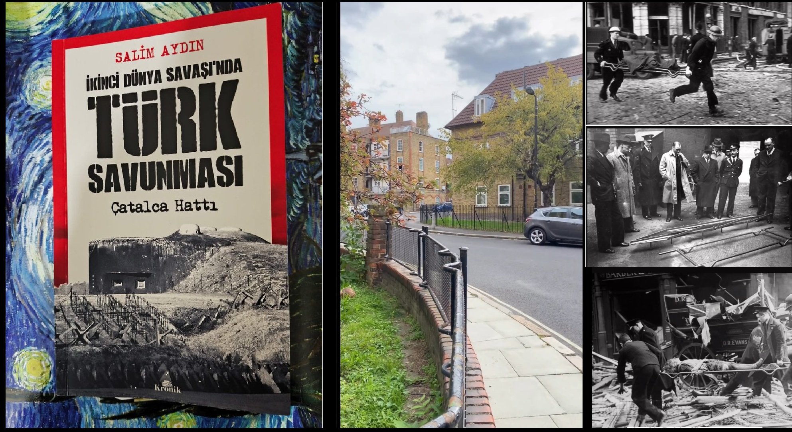
Yazıda bahsi geçen kitabın, bahçe demirlerinin ve sedyelerin görselleri.
Yok edilen korugan ve bahçe demirleri üzerine veyahut israf özelinde bir Britanya Türkiye kıyaslaması.
Salim Hocam’ın (@salimaydinn ) yakın zamanda çıkan kitabından bahsetmiştim. Bu kitap, İkinci Dünya Savaşı sırasında oluşturulan Çatalca Savunma Hattı’nı anlatıyor.
Bu hattın ana unsurlarından biri de koruganlardır. Korugan, savunma amaçlı inşa edilen küçük ve genellikle güçlendirilmiş yapılara verilen addır. Özellikle askeri savunma sistemlerinde kullanılan koruganlar, siperlere entegre edilebilir veya bağımsız yapılar olarak tasarlanabilir.
Bu koruganlar, 1930’ların sonlarında ve 1940’ların başlarında oldukça büyük bir maddi yük oluşturmuş. İçerdikleri dayanıklı malzemeler, özellikle demir ve beton, oldukça maliyetliydi. O yıllarda Türkiye’nin ekonomik durumu da göz önüne alındığında, bunların ne büyük fedakârlıklarla yapıldığı aşikârdır. Tarım arazisinde bulunan ya da özel mülkiyet içinde olanlar dışında günümüzde pek çoğu yok olmuştur.
Yazar, Avrupa’da yapılan koruganlarla Türkiye’dekilerin güncel durumunu oldukça detaylı bir şekilde karşılaştırmış. Ancak ben, bu noktaya değil, farklı bir konuya değinmek istiyorum.
İngiltere’de uzun bir süre yaşadım. Son oturduğum ev, 1800’lerin sonunda inşa edilmiş ve uzun süre itfaiye lojmanı olarak kullanılmış bir binaydı. Şehir merkezindeki binaların çoğu 150 yılı aşkın bir geçmişe sahipti. Üstelik bunlar sivil binalardı; devlet binaları çok daha eskiydi.
Yürüyüş yolu olarak çok sevdiğim bir kanal kenarı vardı. Bu kanal, Sanayi Devrimi sırasında hammadde ve ürün aktarımı için inşa edilmiş ve İngiltere’nin her tarafını saran yapay kanallardan yalnızca biriydi. İlginç olan ise bu kanalların, artık birincil işlevini yitirmiş olmasına rağmen, şehir yaşamına entegre edilerek park ve dinlenme alanları hâline getirilmiş olmasıydı. Üzerinde kürek gibi sporların yapıldığı bir sosyal alan oluşturulmuştu.
Ayrıca, yürümeyi çok sevdiğim pek çok eski ve artık kullanılmayan demiryolu hattı, yürüyüş yollarına ve parklara dönüştürülmüştü. Köprüler ve tüneller yıkılmamış, aksine şehre otantik bir hava katmıştı. Bazı tüneller ise sanatçılar için tuvallere dönüştürülmüştü.
İngiltere’de her sokakta mutlaka ikinci el eşyaların satıldığı bir dükkân bulunur. İnsanlar kullanmadıkları eşyaları buraya getirir ve oldukça güzel şeyler bulunabilir. Buralarda vakit geçirmeyi çok severdim. İsraf etmemek ve bir ürünü maksimum verimle kullanmak, İngiltere’de bir prensip meselesidir.
Ancak size bunlardan değil, başka bir konudan özellikle bahsetmek istiyorum: bahçe demirleri. Londra’da gezerken bazen oval bahçelerde demirlere rastlarsınız. İlk bakışta anlamsız gelebilir, ancak bunların arkasında önemli bir hikâye vardır. Bu demirler, İkinci Dünya Savaşı sırasında sökülüp bükülerek sedye hâline getirilmiş ve savaş sonrasında alındıkları yere tekrar monte edilmiştir.
Milli kaynakların kullanılmasında harcanan özene hayranı olmamak mümkün değil. Düşünebiliyor musunuz? bahçe demirinden sedye yapıp sonra bunları tekrar aldıkları yere koymak.
İngiltere gibi büyük, köklü ve zengin bir imparatorluk tasarrufa bu kadar önem verirken, bizim her şeyi israf etmemiz ne kadar acı. İngiltere’den çok daha mı zenginiz? Bu müsrifliğin, har vurup harman savurmanın mantıklı bir açıklaması var mıdır acaba?
1 Mart 2025 Cumartesi
Modern zamanda günlük tutmanın güzel tarafı, bunu dijital dokümanlarla desteklemek. Her gün bir fotoğraf eklemeyi düşünüyorum. Benim yaşam şartlarımda yaşayan biri için bu pek iyi bir fikir olmayabilir. Ne görüp de çekeceksem... Ama neden olmasın?
Dün bir arkadaşla konuştuk, doktora danışmanının yaklaşık 5000 gündür online günlük tuttuğunu söyledi. Bir fotoğraf, başlık, kısa da olsa bir yazı… Bence inanılmaz bir disiplin, herkes bir şekilde bunu yapabilmeli.
Aklıma gelen şeyleri genelde Twitter'da paylaşıyorum. Twitter benim için bir mini blogdu. Yakın vadede ücretli hesabına geçtim ve artık bu blog mini olmak zorunda değil (280 harflik sınır ücretli hesapta yok). Yine de günlük tutmak, düşünceleri yazmak için Twitter pek güzel bir ortam değil.
Bunu söylememin nedeni ya da bunu böyle görmemin nedeni, düşüncelerimin ve söylediklerimin akış içinde kayboluyor olması. Tabii ki diğer insanlarla iletişim kurmak, etkileşime girmek güzel. Ancak bu gibi sosyal medya ortamlarında, diğer insanlarla etkileşim içinde olmanın ne yazdığınızı da bir şekilde etkilediğini düşünüyorum.
Bu minvalde, bugün ben de bir günlük tutmaya karar verdim. Ramazan’ın ve mart ayının ilk günü olması hasebiyle güzel bir tarih olduğunu düşünüyorum. Tabii bu kasıtlı değil, aslında tamamen bir tesadüf. Bugünü başlamak için güzel hale getiren bir başka neden de bu galiba.